1. Introduction
1.1. Programmation efficace
1.1.1. Objectifs du cours « Programmation efficace »
-
Comprendre les mécanismes utilisés dans les langages de programmation et leur impact sur l’efficacité des applications
-
Découvrir les caractéristiques d’un langage statiquement typé et compilé
-
Présenter les outils de développement associés (compilateur, build, tests)
-
Sensibiliser aux difficultés liées à la gestion de la mémoire, à la gestion d’erreurs, aux I/O, au multi-threading
-
Mettre en évidence les différences d’efficacité liées aux points précédents
1.1.2. Qu’entend-on par efficacité ?
-
La notion d’efficacité couvre un large spectre de critères
-
performances à l’exécution (temps d’exécution, cycles CPU, consommation mémoire)
-
performances énergétiques (consommation d’énergie, impact environnemental)
-
-
Certains de ces critères peuvent être antagonistes
-
Les choix finaux relèvent souvent d’un compromis
-
La question de l’efficacité peut aussi se poser pour le cycle de développement lui-même
1.1.3. Références
-
Portegies Zwart, S. The Ecological Impact of High-performance Computing in Astrophysics. Nat Astron 4, 819–822 (2020) : article dans Nature qui compare l’impact carbone de différents langages de programmation pour des codes d’astrophysique
-
Rui Pereira, and al. Energy efficiency across Programming Languages: how do energy, time, and memory relate? In Proceedings of the 10th ACM SIGPLAN International Conference on Software Language Engineering (SLE 2017). Association for Computing Machinery, New York, NY, USA, 256–267 : article dans SLE qui mesure l’efficacité énergétique de plusieurs langages de programmation
-
Cyrille Bonamy, et al.. Je code : les bonnes pratiques en éco-conception de service numérique à destination des développeurs de logiciels. 2022, pp.1-19. ⟨hal-03009741v4⟩
-
Kheira Bettayeb. Comment rendre les applications moins énergivores ?. CNRS Le journal, 2022.
1.2. Caractéristiques des langages de programmation
1.2.1. Implémentation des langages
-
Avec un langage compilé, le code source du programme est transformé en code machine par le compilateur
-
Dans un langage interprété, le code source du programme est exécuté « à la volée » par l'interpréteur
-
Certains langages sont à la fois compilés et interprétés
-
Il existe des approches intermédiaires (compilation Just In Time (JIT))
C est compilé
util.o et main.o)$ gcc -c util.c
$ gcc -c main.cmonprog)$ gcc -o monprog main.o util.omonprog est exécutable$ ./monprogPython est interprété
$ python3 monprog.pyJava est compilé puis interprété (JIT)
Main.class)$ javac Main.java$ java Main1.2.2. Langage de scripts
-
Un script est un programme destiné à automatiser l’enchaînement de tâches dans un environnement particulier
-
Un langage de scripts est un langage de programmation permettant de développer des scripts
-
Il permet d’invoquer les primitives du système sous-jacent
-
Quelques exemples
-
ECMAScript (Javascript) pour les navigateurs web
-
Lua embarqué dans une application (VLC Media Player, jeu Battle for Wesnoth)
1.2.3. Système de typage
-
Un système de typage attribue des types aux éléments du langage
-
Attribuer un type à une expression permet de limiter les erreurs de programmation
-
en définissant ce qu’il est possible de faire avec une expression
-
en définissant les règles de compatibilité entre expressions
-
en vérifiant ces contraintes
-
Typage explicite vs. implicite
-
Le typage est explicite si les annotations de type sont visibles dans le code source
En C, chaque déclaration de variable précise son typeint nombre = 1; double pi = 3.141592; -
Le typage est implicite si les types ne sont pas précisés dans le code source
En Python, la première affectation crée la variablenombre = 1 pi = 3.141592 -
Des langages à typage explicite peuvent faire appel à l'inférence de types dans certaines situations
-
permet la déduction automatique des types
-
Typage statique vs. dynamique
-
Le typage est statique si l’information de type est associée à l’identificateur
-
⇒ la vérification des types peut être réalisée lors de la compilation
-
-
Le typage est dynamique si l’information de type est portée par l’objet lui-même
-
⇒ la vérification se fait durant l’exécution
-
Typage statique
-
Améliore la fiabilité du programme (plus de vérifications plus précoces)
-
Meilleur support des outils (IDE)
-
Meilleures performances
double a = "une chaine";
// error: incompatible types when initializing type ‘double’ using type ‘char *’Typage dynamique
-
Offre plus de souplesse dans l’écriture du code source
-
duck typing, data as code, métaprogrammation
-
-
Permet le prototypage rapide
pi = 3.14_15_92
pi = 'π'
print(pi * 2) // affiche ππTypage fort vs. faible
-
Le typage est fort si les manipulations entre données de types différents sont limitées et contrôlées
-
Le typage est faible si les possibilités de transtypage sont nombreuses et implicites
-
Ces notions sont relativement floues
int a = "une chaine";
printf("%d\n", a); // 443215...1.2.4. Support des paradigmes de programmation
-
Un paradigme de programmation représente la façon d’aborder un problème et d’en concevoir la solution.
-
Quelques paradigmes
-
Programmation impérative
-
Programmation structurée
-
Programmation modulaire
-
Programmation par abstraction de données
-
Programmation objet
-
-
Programmation fonctionnelle
-
Programmation logique
-
-
Un langage supporte un paradigme quand il fournit les fonctionnalités pour utiliser ce style (de façon simple, sécurisée et efficace)
Exemple - Programmation logique avec Prolog
Prolog est un langage déclaratif qui permet de définir et d’interroger une base de faits
- Idéfix est un chien
chien(idefix).- Les chiens aiment les arbres
aimeLesArbres(X):- chien(X).- Idéfix aime-t'il les arbres ?
?- aimeLesArbres(idefix)Solveur de Sudoku \(4 xx 4\) en Prolog - Requête
- requête
| ?- sudoku([_, _, 2, 3,
_, _, _, _,
_, _, _, _,
3, 4, _, _],
Solution).Solveur de Sudoku \(4 xx 4\) en Prolog - Résolution 1/3
- la solution doit être unifiée avec le problème
- le problème comporte 16 chiffres
- chaque chiffre est compris entre 1 et 4 (fd_domain)
sudoku(Puzzle, Solution) :-
Solution = Puzzle,
Puzzle = [A1, A2, A3, A4,
B1, B2, B3, B4,
C1, C2, C3, C4,
D1, D2, D3, D4],
fd_domain(Puzzle, 1, 4),Solveur de Sudoku \(4 xx 4\) en Prolog - Résolution 2/3
- les blocs (lignes, colonnes et carrés) sont définis
Row1 = [A1, A2, A3, A4],
Row2 = [B1, B2, B3, B4],
Row3 = [C1, C2, C3, C4],
Row4 = [D1, D2, D3, D4],
Col1 = [A1, B1, C1, D1],
Col2 = [A2, B2, C2, D2],
Col3 = [A3, B3, C3, D3],
Col4 = [A4, B4, C4, D4],
Square1 = [A1, A2, B1, B2],
Square2 = [A3, A4, B3, B4],
Square3 = [C1, C2, D1, D2],
Square4 = [C3, C4, D3, D4],Solveur de Sudoku \(4 xx 4\) en Prolog - Résolution 3/3
- le prédicat valid reçoit une liste de 12 blocs
- la liste vide est valide
- la tête de la liste ne comporte pas de doublons (fd_all_different)
- le reste de la liste doit être valide
valid([]).
valid([Head|Tail]) :-
fd_all_different(Head),
valid(Tail).
- une solution possède des blocs valides
valid([Row1, Row2, Row3, Row4,
Col1, Col2, Col3, Col4,
Square1, Square2, Square3, Square4]).Exemple - Programmation fonctionnelle avec Haskell
-
Haskell est un langage fonctionnel
-
Possède un système de typage statique, fort et principalement implicite (inférence de types)
Haskell 1/2
-- Calcul de la fonction factorielle
-- Récursive
fact x = if x == 0 then 1 else fact (x - 1) * x
-- Pattern matching
fact 0 = 1
fact x = x * fact (x - 1)
-- Gardes
fact x
| x > 1 = x * fact (x - 1)
| otherwise = 1
-- Liste et intervalle
fac x = product [1..x]Haskell 2/2
-- Fonctions d'ordre supérieure
mapList f [] = []
mapList f (x:xs) = f x : mapList f xs
-- Listes en compréhension et évaluation paresseuse
take 10 [ (i,j) | i <- [1..], j <- [1..], i < j ]1.2.5. Langage impératif
-
Un langage impératif représente un programme comme une séquence d’instructions qui modifient son état au cours de son exécution
-
Un programme décrit comment aboutir à la solution du problème
-
Proche de l’architecture matérielle des ordinateurs (architecture de von Neumann)
-
De nombreux langages populaires sont de ce type (C, Java, Python)
1.2.6. Langage déclaratif
-
Un langage déclaratif permet de décrire ce que le programme doit faire (le quoi) et non pas comment il doit le faire (le comment)
-
Un programme respectant ce style décrit le problème à traiter
-
Quelques exemples : Prolog, SQL
-
Certains langages impératifs embarquent des constructions déclaratives
1.2.7. Gestion de la mémoire
-
La gestion de la mémoire dans un langage de programmation décrit comment les objets inutilisés sont identifiés et désalloués
-
nécessaire pour éviter les fuites de mémoire (memory leaks)
-
-
La plupart des langages ont une gestion automatique de la mémoire et s’appuient sur un ramasse-miettes (garbage collector)
int[] tableau = new int[10]; // allocation d'un tableau de 10 cases
// la désallocation est automatiqueint[] tableau = malloc(10 * sizeof(int)); // allocation d'un tableau de 10 cases
// ...
free(tableau); // libération de la mémoire1.2.8. Caractéristiques de quelques langages
| Langage | Implémentation | Scripts | Typage | Paradigme | Mémoire |
|---|---|---|---|---|---|
C |
Compilé |
Non |
explicite, statique |
procédural |
manuelle |
Java |
Compilé, interprété |
Non |
explicite, statique |
OO, fonc., générique |
auto |
PHP |
Interprété |
Oui |
implicite, dynamique |
proc., OO |
auto |
Python |
Compilé, Interprété |
Oui |
implicite, dynamique |
proc., OO, fonc. |
auto |
Rust |
Compilé |
Non |
implicite, statique |
proc., fonc., générique |
manuelle |
Scala |
Compilé, interprété |
Oui |
implicite, statique |
OO, fonc., générique |
auto |
1.3. Rust RefCard
1.3.1. Le langage Rust
Historique
-
Conçu et développé initialement par Graydon Hoare (Mozilla Research) en 2010
-
Première version stable en 2015
Caractéristiques du langage
-
Langage compilé à typage statique fort
-
Supporte les paradigmes impératif, fonctionnel et concurrent
-
Gestion manuelle de la mémoire (pas de garbage collector)
-
Accès mémoire validés statiquement par le compilateur (borrow checker)
-
Est accompagné de cargo pour la gestion de la compilation et des bibliothèques
1.3.2. Quelques domaines d’application
-
Programmation système
-
Applications en ligne de commande
-
Applications Web (via WebAssembly)
-
Services réseaux
-
Systèmes embarqués.
1.3.3. Quelques outils de développement
-
Le compilateur
rustcainsi que l’environnement de développement est préférentiellement installé avec l’outil de distributionrustup -
cargoest le gestionnaire de compilation et de dépendance -
crates.ioest le dépôt central des bibliothèques du langage -
rustfmtformate les fichiers sources -
rustdocgénère la documentation de l’API d’une application -
clippyest un linter pour le code Rust
1.3.4. « Hello World » en Rust
fn main() { (1)
println!("Hello world!"); (2)
}| 1 | Le programme principal est représenté par la fonction main |
| 2 | La macro println! affiche un texte sur la sortie standard |
1.3.5. Compilation
Compilateur
rustc$ rustc hello.rs
-L
|
ajoute un répertoire au chemin de recherche des bibliothèques |
--edition
|
précise l’édition de Rust à utiliser (2015|2018|2021) |
--emit
|
spécifie le type de fichiers de sortie à générer |
-g
|
inclut les informations de débogage |
-O
|
optimise le code |
--explain
|
donne des détails sur un message d’erreur |
--test
|
génère un programme pour exécuter les tests à la place du |
Exécuter le programme
$ ./hello1.3.6. Débuter un projet Rust
cargo$ cargo new hello
$ tree hello
hello
├── Cargo.toml
└── src
└── main.rscargo initialise un projet Rust avec-
un nouveau répertoire du nom du projet,
-
un dépôt
git, -
un fichier
Cargo.tomldécrivant le projet, -
un sous-répertoire pour le code source,
-
un fichier
main.rscontenant lemaindu crate
Système de build
cargo$ cd src/intro/exemples/hello
$ cargo build
Compiling hello v0.1.0 (src/intro/exemples/hello)
Finished dev [unoptimized + debuginfo] target(s) in 0.42s
$ cargo run
Finished dev [unoptimized + debuginfo] target(s) in 0.01s
Running `target/debug/hello`
Hello, world!
build
|
construit le crate en mode débogage
|
check
|
vérifie le crate sans générer d’exécutable |
run
|
exécute le crate |
test
|
compile et exécute les tests |
1.3.8. Commentaires
-
/* … */le texte entre
/*et*/est ignoré (peuvent être imbriqués)/** … */commentaire de documentation (équiv. à l’attribut doc
#[doc="…"])/*! … */commentaire de documentation interne (équiv. à l’attribut doc
#[doc="…"])// …le texte jusqu’à la fin de la ligne est ignoré
/// …commentaire de documentation (équiv. à l’attribut doc
#[doc="…"])//! …commentaire de documentation interne (équiv. à l’attribut doc
#[doc="…"])
1.3.9. Système de typage
-
Le type d’une valeur définit l’interprétation de l’emplacement mémoire la contenant ainsi que les opérations qu’on peut lui appliquer
-
Chaque variable ou expression possède un type
-
Rust est un langage à typage statique
-
Le compilateur peut en général inférer le type d’une variable à partir de son contenu
1.3.10. Types primitifs
bool
|
Booléen ( |
i8, i16, i32, i64, i128, isize
|
Entier signé (8, 16, 32, 64, 128 bits ou dépendant de l’architecture) |
u8, u16, u32, u64, u128, usize
|
Entier non signé (8, 16, 32, 64, 128 bits ou dépendant de l’architecture) |
f32, f64
|
Nombre en virgule flottante (simple ou double précision) |
char
|
Caractère Unicode (32 bits) |
str
|
Chaîne de caractères UTF-8 |
array
|
Tableau de taille fixe |
tuple
|
Séquence d’éléments hétérogènes |
| Expérimentez (rustlings, Rust By Practice, Rust by Example) |
1.3.11. Littéraux
-
Un littéral représente la valeur d’un type
-
Quelques littéraux
'C'Caractère Unicode (
b’C'pour un caractère ASCII)"chaîne"Chaîne de caractères Unicode (
b"chaîne"pour une chaîne ASCII)12345Entier (
0xFFen hexa,0o77en octal,0b1111en binaire)123.0E+77Nombre à virgule flottante
-
Le caractère
_peut être utilisé pour rendre les nombres plus lisibles -
Un suffixe de type sur un nombre permet de préciser le type souhaité (
123u64,12E+99_f64)
1.3.12. Variables
-
Les variables en Rust sont par défaut immuables
-
quand une valeur est attachée à une variable, elle ne peut plus être modifiée
-
-
Le mot-clé
letpermet de déclarer une variablelet x = 5; -
Une variable peut être rendue modifiable avec le mot-clé
mutlet mut x = 5; -
Le nom d’une variable peut être réutilisé (Shadowing)
let x = 5; let x = x * 2; -
Chaque variable possède un type qui est inféré la plupart du temps
-
Le type d’une variable peut aussi être précisé
let x: u32 = 5;
| Expérimentez (rustlings, Rust By Practice, Rust by Example) |
1.3.13. Constantes
-
Une constante est introduite par le mot-clé
constet doit être annotée par son typeconst MAX_POINTS: u32 = 100_000; -
Une constante peut être déclarée dans n’importe quelle portée et doit être initialisée par une expression constante
| Expérimentez (Rust by Example) |
1.3.14. Référence
-
En Rust, toute valeur appartient à une variable (ownership)
-
à un instant donné, il ne peut y avoir qu’un unique propriétaire
-
quand le propriétaire sort de sa portée, la valeur est détruite
-
-
Il est possible d'emprunter (borrow) la valeur d’une variable avec une référence (
&)-
la propriété n’est alors pas transférée
-
pour pouvoir modifier une valeur par l’intermédiaire d’une référence, il faut que cette dernière soit modifiable (
&mut) -
quand il existe une référence mutable pour une valeur, aucune autre référence ne peut pointer sur la valeur
-
-
Pour déréférencer une référence, on utilise l’opérateur
*-
la plupart du temps, le déréférencement se fait implicitement
-
|
1.3.15. Slice
-
Un slice (
[T]) est un type primitif permettant de référencer une portion d’une séquence contiguëe d’éléments-
c’est une vue sur un bloc de mémoire représentée par un pointeur et une taille
-
cf. le type primitif slice
-
cf. le module
std::slice
-
-
Un slice est une sorte de référence (donc n’est pas propriétaire)
-
Un slice peut être immuable (
&[T]) ou modifiable (&mut [T])
|
1.3.16. Smart pointers
Box<T>
|
pour allouer des valeurs sur le tas |
Rc<T>
|
un type de comptage de références pour gérer les propriétaires multiples |
Ref<T>, RefMut<T>
|
accédé par |
| Expérimentez (Rust by Example) |
1.3.17. Chaînes de caractères
Type primitif str
-
Le type primitif
strest un slice de type[u8](séquence d’octet)-
la plupart des fonctions suppose qu’une valeur de type
strcontient une chaîne UTF-8
-
-
Généralement manipulé sous la forme empruntée
&str -
Un littéral est de type
&'static str -
Le module std::str permet la manipulation des variables de ce type
-
Quelques opérations :
chars,contains,find,getis_empty,len,replace,split,trim
Exemple
let hello = "Hello, world!"; (1)
assert!(!hello.is_empty());
assert_eq!(13, hello.len());
assert_eq!("Hello", &hello[0..5]); (2)
assert_eq!(Some("world"), hello.get(7..12));
println!("{}", hello); (3)| 1 | hello est de type &'static str |
| 2 | Extraction d’un sous-slice |
| 3 | La macro println! formate et affiche une chaîne sur la sortie standard |
Exemple
let hello = "Hello".to_string(); (1)
assert!(!hello.is_empty());
assert_eq!(5, hello.len());
let mut world = String::from("world");
assert_eq!(5, world.len());
let msg = hello + &world; (2)
assert_eq!("Helloworld", msg);
world.insert_str(0, "Hello");
assert_eq!("Helloworld", world);
world.insert_str(5, ", ");
assert_eq!("Hello, world", world);
world.push_str(" !");
assert_eq!("Hello, world !", world);| 1 | hello et world sont de type String |
| 2 | Concatène les deux variables (hello est déplacé, world est emprunté) |
| Expérimentez (rustlings, Rust By Practice, Rust by Example) |
1.3.18. Structures de contrôle
Conditionnelle
Expression if
let celsius = true; // false -> Fahrenheit
let freeze_temp = if celsius { 0 } else { 32 }; (1)
assert_eq!(0, freeze_temp);
let temperature = 12;
assert!(temperature > freeze_temp);
if temperature < freeze_temp { (2)
println!("Freezing");
} else {
println!("Not freezing");
}| 1 | if est une expression |
| 2 | if peut être utilisée comme une instruction |
Expression match
let message = match temperature {
-20 ..= -1 => "Froid", (1)
0 => "Limite", (2)
1 ..= 10 => "Frais",
11 ..= 25 => "Idéal",
_ => "Insupportable", (3)
};
assert_eq!("Idéal", message);| 1 | Intervalle [-20, -1] |
| 2 | La valeur 0 |
| 3 | Toutes les autres valeurs |
Boucles
Expression loop
let mut counter = 0;
let result = loop { (1)
counter += 1;
if counter == 10 {
break counter * 2; (2)
}
};
assert_eq!(20, result);| 1 | la boucle se poursuit tant que le mot-clé break n’est pas utilisé |
| 2 | une expression loop terminée par break accepte une valeur de retour |
Expression while
let mut number = 5;
while number != 0 { (1)
println!("{}", number);
number -= 1;
}
assert_eq!(0, number);| 1 | la boucle se poursuit tant que la condition est vraie |
Expression for
let elements = [10, 20, 30, 40, 50];
for element in elements.iter() { (1)
println!("the value is: {}", element);
}
for number in (1..4).rev() { (2)
println!("{}!", number);
}| 1 | for permet d’itérer sur les éléments d’une collection |
| 2 | en utilisant le type Range, on peut manipuler des indices |
| Expérimentez (rustlings, Rust By Practice, Rust by Example) |
1.3.19. Fonction
-
La définition d’une fonction est introduite par le mot-clé
fn -
Par convention, le nom de la fonction est écrit en snake case
-
Les paramètres sont entre parenthèses et leurs types doivent être précisés
-
Le corps de la fonction est entre accolades
{ }src/intro/exemples/function.rsfn another_function(x: i32) { println!("The value of x is: {}", x); } -
Une fonction retourne la valeur de la dernière expression ou l’argument de
returnfn five() -> i32 { (1) 5 }1 l’annotation de type après →précise le type de retourpour pouvoir être retournée, la dernière ligne d’une fonction doit être une expression (pas de ;). Une instruction (terminée par un;) provoquerait une erreur de compilation.
| Expérimentez (rustlings, Rust By Practice, Rust by Example) |
1.3.20. Système de modules
-
Rust supporte différents moyens pour organiser un projet
Package permet de construire, tester et partager des crates avec Cargo
Crate est un arbre de modules produisant une bibliothèque ou un exécutable
Module permet de contrôler l’organisation, l’encapsulation et la portée des paths (avec
use)Path est un moyen de nommer un item (fonction, module, …)
-
Le mot-clé
useimporte un path dans la portée couranteuse std::fmt::Result; use std::io::Result as IoResult;
| Expérimentez (rustlings, Rust By Practice, Rust by Example) |
1.3.21. Bibliothèques
-
Rust est distribué avec une riche bibliothèque standard
-
accessible par le path
std -
le module
std::preludeest automatiquement importé dans chaque programme -
contient entre autre des types importants comme
Vec<T>etOption<T>, des opérations sur les types primitifs, des macros et des abstractions pour les I/O et le multithreading
-
-
Bibliothèques externes avec Cargo et crates.io
1.3.22. Quelques types et modules importants
Range
|
représente un intervalle (littéral |
Tuple
|
une séquence finie et hétérogène d’éléments (littéral |
Tableau
|
un tableau de taille fixe d’éléments de même type (littéral |
Vec<T>
|
un tableau de taille variable (rustlings, Rust By Practice, Rust by Example) |
Result<T, E>
|
pour retourner et propager une erreur (Rust By Practice, Rust by Example) |
Option<T>
|
pour représenter une valeur optionnel (rustlings, Rust by Example) |
| std::collections |
manipulation de collections |
| std::fmt |
formatage de chaînes de caractères (Rust By Practice, Rust by Example) |
| std::io |
gestion des I/O (Rust by Example) |
1.3.23. Références
Documentation officielle
-
The Rust Programming Language, Steve Klabnik and Carol Nichols
-
Documentation de la bibliothèque standard
-
Référence du langage
Autres documents
-
Comprehensive Rust, Google
-
A Gentle Introduction To Rust, Steve Donovan
-
Tutoriel Rust, Guillaume Gomez
-
Effective Rust, David Drysdale, 2024
-
Learn Rust the Dangerous Way, Cliff L. Biffle, 2024
-
Rust Language Cheat Sheet, Ralf Biedert
-
17 Resources to Help You Learn Rust in 2022, Gints Dreimanis, 2022
-
Rust vu du C++, Hadrien Grasland, 2023
-
Comment se former à Rust en 2024, JetBrains, 2024
-
Pourquoi Discord passe de Go à Rust, Jesse Howarth, 2020
Apprendre en codant
-
Playground (coder dans le navigateur)
-
rustlings (ensemble d’exercices pour apprendre le langage)
-
Rust by Example (exemples exécutables dans le navigateur)
Sujets spécifiques
-
Prototyping in Rust, Matthias Endler, 2025
-
The ultimate guide to Rust newtypes, How To Code It, 2023
-
The definitive guide to error handling in Rust, How To Code It, 2024
-
Modular Errors in Rust, Sabrina Jewson, 2023
2. Outils de développement
2.1. Au delà de l’éditeur et du compilateur
-
Les outils à la disposition d’un développeur de logiciels ne se limite pas à un éditeur de texte et un compilateur/interpréteur
-
De nombreux outils existent pour assister le développeur dans ses multiples tâches:
Écrire du code et collaborer éditeurs de texte, environnements de développement intégrés, gestion de versions
Exécution contrôlée d’un programme débogage, tests et profilage
Qualité du code et documentation styles de codage, génération de documentation
Construction d’un projet automatisation de la gestion de la compilation et des dépendances
Livraison et déploiement automatisations et livraison continue
2.2. Au niveau du système d’exploitation
2.2.1. Introduction
-
De nombreux outils généralistes peuvent être d’une grande aide pour le développeur
-
Certains sont directement intégrés à l’OS
-
D’autres peuvent y être avantageusement ajoutés
2.2.2. Shells
-
Le Shell (ou interpréteur de commandes) est l’interface en ligne de commande (Command Line Interface ou CLI) permettant d’interagir avec le système d’exploitation
-
C’est un outil important que doit maîtriser un développeur
-
À l’aide du langage de script qu’il intègre, le shell fournit un puissant moyen pour l’automatisation de tâches récurrentes
-
Il peut être largement personnalisé et adapté grâce aux fichiers d’initialisation (dot files sous Unix)
| Unix/Linux/Mac OS | |
| Windows |
PowerShell , cmd |
2.2.3. Outils en ligne de commande
Gestion de processus/mémoire
-
htop / bottom / top / free
2.3. Écrire du code et collaborer
2.3.1. Éditeur de texte
-
Défaire/refaire, couper/copier/coller, rechercher/remplacer, …
-
Aides à la saisie (coloration syntaxique, indentation automatique, reformatage, …)
-
Pliage (folding)/dépliage (unfolding) de texte
-
Appel de programmes externes (compilateur, …)
-
Support de projets (ensemble de fichiers avec une configuration)
2.3.2. Environnement de développement intégré
-
Gestion de projets (fichiers, dépendances, configuration, …)
-
Auto-complétion de code
-
Navigation dans les classes
-
Refactoring
-
Débogage
-
Profiling
-
Gestion de versions
| Rust | Java | Python |
|---|---|---|
Rust support for Visual Studio Code, Plugin Rust pour IntelliJ, Rust tools |
Spyder, PyCharm, PyDev, Python pour VS Code, Python Tools for Visual Studio |
2.3.3. Gestion des versions
-
La gestion de versions (version control, revision control, source control ou source code management (SCM)) consiste à maintenir l’ensemble des versions d’un ou plusieurs documents
-
La gestion de versions concerne principalement le développement logiciel mais peut être utilisée pour tout document informatique
-
C’est une activité fastidieuse et source d’erreurs qui bénéficie d’une façon importante d’un support logiciel (système de gestion de versions, version control system (VCS))
-
De nombreuses applications proposent ce genre de fonction (Wiki, LibreOffice, Microsoft Word, …)
Système de gestion de versions
-
Permet la gestion des versions successives d’un ensemble de documents
-
conserve toutes les versions successives dans un référentiel ou dépôt (repository) ·** permet de naviguer entre les versions
-
-
Permet le travail collaboratif
-
chaque utilisateur travaille sur une copie locale
-
le système signale les conflits
-
Périmètre d’utilisation des VCS
-
Gestion d’un ensemble de fichiers textes
-
code source
-
pages html, xml, …
-
documents LaTeX
-
-
Supportent l’organisation en hiérarchie de répertoires et les métadonnées (permissions, …)
-
Supportent également les fichiers binaires (moins adapté)
Modèles pour la gestion de version
| Sans contrôle, la modification d’un même fichier par plusieurs personnes au même moment risque de générer des incohérences. |
-
un fichier doit être verrouillé avant une modification
-
une seule personne peut le modifier à un instant donné (approche pessimiste)
-
simple mais réduit considérablement la concurrence
-
plusieurs personnes peuvent modifier un fichier en parallèle (approche optimiste)
-
le système s’occupe de fusionner les différentes modifications
-
certains cas ne peuvent pas être traités automatiquement (conflits)
Architecture des VCS
-
Les premiers VCS ne supportaient qu’un mode local
-
La seconde génération fonctionnait selon un mode client/serveur (mode centralisé)
-
le référentiel est centralisé
-
tout doit être reporté sur ce référentiel
-
nécessite donc un accès au référentiel pour la plupart des opérations
-
-
Les nouveaux VCS (Distributed VCS ou DVCS) supportent un mode pair à pair (mode réparti)
-
chaque développeur possède son propre référentiel
-
un utilisateur peut récupérer une partie d’un référentiel accessible (pull)
-
un utilisateur peut publier une partie de son référentiel dans un autre (push)
-
2.3.4. Forge logicielle
-
un système de gestion de version
-
des outils de collaboration (fils de discussion, …)
-
du suivi de tickets (bogues, …)
-
un gestionnaire de documentation (wiki par exemple)
2.4. Débogage, tests et profilage
2.4.1. Débogage
Bogue, débogage et débogueur
-
Un bogue (bug) est un défaut dans un programme qui l’empêche de fonctionner correctement
-
Le débogage (debugging) est une activité ayant pour objectif de localiser les bogues dans un programme
-
Le débogage est basé sur la confirmation
-
c’est un processus destiné à confirmer les choses que l’on croit vrai jusqu’à en trouver une qui ne l’est pas
-
-
Un débogueur (debugger) est un outil fournissant une aide pour le débogage
Pourquoi utiliser un débogueur ?
-
Pour gagner du temps !
-
Les alternatives sont moins efficaces (mais parfois utiles tout de même)
Fonctionnalités d’un débogueur
-
Exécution contrôlée du programme
-
pas à pas sommaire (sans entrer dans les fonctions)
-
pas à pas détaillé
-
retour en arrière (plus rare)
-
-
Points d’arrêt (breakpoints)
-
repère sur une instruction signalant au débogueur qu’il doit faire un pause dans l’exécution lorsqu’il arrive à cette instruction
-
peut être également associé à une condition
-
un point d’observation (watchpoint) stoppe le programme lorsque l’état d’une expression change
-
un catchpoint fait de même quand un événement se déclenche
-
-
Visualisation de l’état du programme
-
variables, pile d’appel, …
-
certains débogueurs permettent l’affichage de structure de données complexes
-
-
Modification de l’état du programme
-
Débogage à distance
Processus de débogage
-
Tenter de reproduire le bogue
-
Simplifier les entrées du programme
-
Exécuter le programme sous le contrôle du débogueur
-
Se positionner à l’endroit de l’erreur signalée ou au milieu du programme (pose d’un breakpoint) si aucune erreur n’est signalée
-
Examiner le contexte pour confirmer que les variables possèdent les valeurs attendues
-
Déterminer la position suivante à étudier et retourner en 5
Nécessite de compiler le programme avec les informations de débogage (option -g de rustc, javac ou de gcc)
|
2.4.2. Tests
Définition et intérêt
|
Un test ne permet pas de prouver l’absence de bogue (≠ des méthodes formelles). Program testing can be a very effective way to show the presence of bugs, but it is hopelessly inadequate for showing their absence. Edsger W. Dijkstra, « The Humble Programmer » (1972)
|
Quelques types de tests
-
Un test boite blanche (white box) s’appuie sur une connaissance de la structure interne de l’élément à tester
-
Un test boite noire (black box) s’appuie sur les spécifications de l’élément
-
Un test de non régression vérifie que le système ne se dégrade pas lors de ses évolutions
-
Un test fonctionnel s’assure que les résultats attendus sont bien obtenus
-
Un test non fonctionnel analyse les propriétés non fonctionnelles d’un système
-
test des performances pour vérifier l’efficacité du système
-
test de sécurité pour s’assurer du respect des règles de confidentialité
-
Granularité de tests
| Unitaire |
Les tests unitaires vérifient la conformité des éléments de base d’un programme (fonctions, classes, …) et sont en général réalisés par le développeur. |
| Intégration |
Les tests d’intégration vérifient la cohérence des différents modules et la bonne communication entre eux. |
| Système |
Les tests systèmes concernent l’ensemble du projet et son intégration dans son environnement. |
| Recette |
Les tests de recette (ou d’acceptation) confirment la conformité du système avec les besoins. |
Intégration au processus de développement
-
Généralement (cycle de développement en V par exemple), les tests sont réalisés par un groupe de testeurs après la réalisation des fonctionnalités
-
Une pratique encouragée par les méthodes Agiles et XP consiste à débuter le processus par les tests (Développement dirigé par les tests)
2.4.3. Tests unitaires
Définition et objectifs
-
Un test unitaire (unit test) vise à augmenter la confiance du programmeur dans des portions du code source
-
Une unité fait référence à la plus petite partie testable de l’application (fonction, méthode)
-
Le but des tests unitaires est d’isoler chaque partie du programme pour la tester indépendamment
-
isoler les différents éléments nécessite souvent d’avoir recours à du code de substitution (stub, fake ou mock object)
-
-
Ces tests peuvent être réalisés à la main (affichages et vérification visuel, débogueur) ou avec un framework spécialisé par exemple de type
xUnit
| Java | Python | Bash |
|---|---|---|
Principe
-
Pour chaque unité, on écrit une ou plusieurs méthodes de test
-
un outil de gestion est nécessaire vu le nombre de tests
-
-
Une possibilité intéressante est d’écrire le test avant la méthode
-
précise d’abord ce que doit faire la méthode
-
-
L’ensemble des tests peut ensuite être répété autant que nécessaire
-
l’exécution des tests après chaque modification permet de vérifier la non régression
-
Caractéristiques des tests unitaires
-
Petits (analyse d’un point précis) et rapides (exécutés souvent)
-
Totalement automatisés
-
Toujours au niveau de l’unité
-
Indépendants les uns des autres (pas de contraintes d’ordre)
-
N’utilisent pas de ressources externes (SGBD, …)
Doublure de tests
-
Un test unitaire se focalise sur un élément particulier
-
Ce dernier peut être dépendant d’autres éléments
-
Une doublure de test permet de remplacer ces dépendances
| Fantôme |
un objet fantôme (dummy) sert juste à remplir des listes de paramètres |
| Substitut |
un objet substitut (fake) fournit une implémentation simplifiée |
| Bouchon |
un objet bouchon (stub) retourne des réponses prédéfinies spécifiques aux tests |
| Simulacre |
un objet simulacre (mock) est préprogrammé par des attentes, i.e. une spécification du comportement attendu |
| Java |
|---|
2.4.4. Tests unitaires en Rust
-
Un test est une fonction qui vérifie qu’une portion de code fonctionne de la manière attendue.
-
Le corps de la fonction réalise les actions suivantes:
-
Initialiser le contexte du test
-
Exécuter le code à tester
-
Vérifier (assert) les résultats
-
Fonction de test
#[test] (1)
fn it_adds_two() { (2)
assert_eq!(4, add_two(2)); (3)
}| 1 | La fonction est annotée avec l’attribut test |
| 2 | La fonction ne prend pas de paramètre |
| 3 | Le résultat est vérifié avec la macro assert!, assert_eq! ou assert_ne!
|
Exécuter les tests
-
rustc --testcompile le programme en générant un exécutable qui lance les tests -
cargo testfait de même puis exécute les tests
Organiser les tests
-
Par convention, les tests unitaires sont placés dans le module
testsdu fichier testé#[cfg(test)] (1) mod tests { (2) use super::*; (3) #[test] fn it_works() { //... } }1 L’annotation cfg(test)permet de compiler ce module uniquement pour les tests2 Les tests sont placés dans le module tests3 Donne accès au contenu du module englobant -
Les tests d’intégration sont en général placés dans le répertoire
testsau même niveau quesrc
Tests et documentation
-
Les exemples mentionnés dans la documentation de l’API d’une fonction sont automatiquement exécutés
/// Adds one to the number given. /// /// # Examples /// /// ``` /// let arg = 5; /// let answer = my_crate::add_one(arg); /// /// assert_eq!(6, answer); /// ``` pub fn add_one(x: i32) -> i32 { x + 1 }
2.4.5. Couverture de code
-
L’objectif est de vérifier que les tests unitaires couvrent bien l’ensemble du code écrit
-
La couverture de code (code coverage) est un outil de mesure de la qualité des tests effectués
-
Le degré de couverture est mesuré par des indices statistiques
-
Les portions de codes non testées sont mises en évidence
Quelques métriques
-
Le Statement Coverage (ou Line Coverage) mesure le degré d’exécution de chaque ligne
-
simple mais ignore un certain nombre d’erreurs (ne prend pas en compte la logique du programme)
-
-
Le Condition Coverage indique si toutes les conditions ont été évaluées
-
les conditions doivent être évaluées à vrai et à faux pour obtenir un taux de 100%
-
aide à résoudre les problèmes de la mesure précédente
-
-
Le Path coverage examine si chaque chemin a été parcouru
-
Le Function Coverage vérifie si chaque fonction a été appelée
| Un score de 100% ne garantit pas la correction du programme. Ce n’est même pas un objectif ! |
| Rust | Java |
|---|---|
2.4.6. Développement piloté par les tests
-
Le développement piloté par les tests (Test Driven Development ou TDD) est une méthode de développement mettant l’accent sur les tests unitaires
-
Cette méthode préconise d’écrire les tests avant le code
-
Only ever write code to fix a failing test
-
-
Cette approche permet de spécifier ce que l’on attend du système avant de le réaliser
-
Elle est basée sur les tests et le refactoring
-
Le refactoring consiste à améliorer la conception du programme sans en changer le comportement (les fonctionnalités)
-
Le TDD n’est pas limité aux tests unitaires mais s’applique aussi aux tests de recette (Acceptance TDD)
Cycle de développement
-
Le TDD s’appuie sur de courtes itérations
-
Chaque itération possède cinq étapes
-
Écrire un test
-
Exécuter les tests et vérifier que le nouveau échoue
-
Écrire juste le code nécessaire pour faire passer le test
-
Réexécuter les tests et vérifier que tous les tests passent
-
Corriger la conception du système (refactoring)
-
-
La phase de refactoring s’applique aussi bien au code de l’application qu’au code des tests
2.4.7. Optimisation et profilage
-
L'optimisation est la pratique qui consiste à modifier un système pour qu’il fonctionne plus efficacement
-
par exemple plus rapidement ou en consommant moins de ressources
-
L’optimisation est souvent un compromis entre différents facteurs
-
-
L'analyse dynamique (profiling) d’un programme a pour objectif de collecter des informations sur le comportement d’une application pendant son exécution
-
Les éléments à surveiller sont l’utilisation des CPU, l’utilisation de la mémoire, les threads, …
-
| Ce type d’analyse a un impact sur le comportement de l’application. |
Mise en œuvre
-
Un outil d’analyse dynamique permet de collecter et de présenter les informations résultant de l’analyse de l’exécution
-
Utilisé pour l’analyse de performances, un tel outil permet de localiser les points chauds (hot spots) du programme
-
point chaud : portion de code longue à exécuter
-
rapports sur les fonctions appelées, temps passé dans chaque fonction, …
-
A propos de l’optimisation prématurée
| La phase d’optimisation ne doit intervenir qu’une fois que le programme fonctionne et répond aux spécifications fonctionnelles. |
-
More computing sins are committed in the name of efficiency (without necessarily achieving it) than for any other single reason - including blind stupidity., W.A. Wulf
-
We should forget about small efficiencies, say about 97% of the time: premature optimization is the root of all evil. Yet we should not pass up our opportunities in that critical 3%., Donald Knuth
-
Bottlenecks occur in surprising places, so don’t try to second guess and put in a speed hack until you have proven that’s where the bottleneck is., Rob Pike
-
The First Rule of Program Optimization: Don’t do it. The Second Rule of Program Optimization (for experts only!): Don’t do it yet., Michael A. Jackson
Optimisation à différents niveaux
| Conception |
algorithmes, architecture de l’application, … |
||
| Code source |
utilisation d’idiomes adaptés au langage
|
||
| Compilateur |
utiliser les optimisations fournies par le compilateur |
||
| Assembleur |
spécifique à une plateforme |
||
| Exécution |
compilateur just in time |
2.5. Qualité du code et documentation
2.5.1. Conventions de codage
Styles de codage
-
Améliore la lisibilité du code source
-
le code est plus facile à comprendre
-
le code est plus facile à maintenir
-
-
On s’appuie généralement sur l’éditeur de texte et/ou un outil de vérification
| L’important est de choisir un style et de s’y tenir ! |
Exemple : un extrait de code Java ne respectant pas de convention
public static <T extends Comparable<? super T>> void f(List<T> l) {
int s=l.size();
int i,j;
for(i=0;i<s-1;++i)
{
for(j=0;j<s-1-i;++j){
if(l.get(j+1).compareTo(l.get(j))<0){
T t=l.get(j);
l.set(j,l.get(j+1));l.set(j+1,t);
}}}
}Exemple : un extrait de code Java respectant une convention
/**
* Tri la liste passée en paramètre en ordre croissant
* en respectant l'ordre naturel de ses éléments.
* Les éléments de la liste doivent implémenter
* l'interface <code>Comparable</code>.
* Cet méthode utilise un algorithme de tri a bulle.
*
* @param aList la liste à trier
*/
public static <T extends Comparable<? super T>> void bubbleSort(List<T> aList) {
int size = aList.size();
for (int i = 0; i < size - 1; ++i) {
for (int j = 0; j < size - 1 - i; ++j) {
if (aList.get(j+1).compareTo(aList.get(j)) < 0) { // compare les deux voisins
// échange les deux voisins
T tmp = aList.get(j);
aList.set(j, aList.get(j + 1));
aList.set(j + 1, tmp);
}}
}}Quelques conventions
| Plusieurs | Rust | Java | Python | C++ |
|---|---|---|---|---|
Google Style Guides, Google, 2014. Clean Code: A Handbook of Agile Software Craftsmanship, Robert C. Martin, Pearson, 2009. |
Java code conventions, SUN, 1999. Coding standards for Java, AmbySoft, 2007. Java Programming Style Guidelines, Fluxens. Java Language Coding Guidelines, Cay Horstmann, 2004. |
C++ Coding Standards: 101 Rules, Guidelines, and Best Practices, Herb Sutter, Andrei Alexandrescu, Pearson, 2005. |
Thèmes abordés par les conventions
- Structure et contenu d’un fichier source
-
Files longer than 2000 lines are cumbersome and should be avoided.
- Conventions de nommage
-
Class names should be nouns, in mixed case with the first letter of each internal word capitalized.
- Format et emplacement des commentaires
-
Short comments can appear on a single line indented to the level of the code that follows.
- Indentation des lignes
-
Four spaces should be used as the unit of indentation.
- Format des déclarations, des instructions et emplacement des espaces
-
Each line should contain at most one statement.
- Quelques bonnes pratiques
-
Don’t make any instance or class variable public without good reason.
Audit des conventions de codage
-
Des outils permettent de réaliser un audit des fichiers sources
-
Génèrent un rapport des violations des conventions de codage
-
Sont généralement configurables pour différentes conventions
| Rust | Java | Python |
|---|---|---|
Outils de reformatage
-
Mettre en conformité le code source avec des conventions
-
Concerne uniquement la mise en forme du code (indentation, espaces, …)
-
La plupart des IDE assurent également ce service
2.5.2. Documenter un code source
Qu’est-ce qu’une bonne documentation ?
-
Un commentaire doit clarifier le code
-
la documentation du code doit permettre à une autre personne de mieux comprendre le code
-
-
Documentez pourquoi les choses sont faites et pas simplement ce qui est fait
-
ne paraphrasez pas le code
-
-
Rédigez des commentaires simples et concis
-
Écrivez la documentation avant d’écrire le code
-
permet de définir l’objectif en premier
-
-
Évitez les commentaires décoratifs (bannières, …)
-
ajoute peu de valeurs à la documentation
-
est une perte de temps
-
| Idéalement, un code bien écrit doit se suffire à lui-même, i.e. doit se lire (et se comprendre) facilement sans commentaire. |
Intérêt des outils de génération de la documentation
-
Générer automatiquement la documentation (dans diverses formats) du code source
-
Permet de garder plus facilement la documentation en phase avec le code
| Plusieurs | Rust | Java | Python |
|---|---|---|---|
Documenter une API Rust
-
Les commentaires de documentation débutent par
///et concerne l’élément suivant le commentaire (//!pour documenter l’élément englobant) -
Cette syntaxe est un raccourci pour définir l’attribut
doc(#[doc = " This is a doc comment."]) -
Ces commentaires supportent une syntaxe Markdown pour la mise en forme
-
La documentation au format HTML est ensuite générée avec
cargo doc(qui invoquerustdoc)
/// Adds one to the number given.
///
/// # Examples
///
/// ```
/// let arg = 5;
/// let answer = my_crate::add_one(arg);
///
/// assert_eq!(6, answer);
/// ```
pub fn add_one(x: i32) -> i32 {
x + 1
}2.5.3. Audit de code source et Analyse statique
Audit de code source
-
L'audit ou revue de code consiste à étudier attentivement un code source afin de détecter et de corriger des erreurs
-
L’objectif est d’améliorer la qualité du logiciel et l’expérience des développeurs
-
Peut prendre différentes formes
Fagan inspection est un processus formel pour l’audit de code
"par dessus l’épaule" un développeur suit en temps réel ce qu’un autre écrit
programmation par binôme deux développeurs travaillent de concert et échange leur rôle régulièrement (vient de eXtreme Programming (XP))
assisté par un outil s’appuie sur des outils pour une analyse systématique
Analyse statique du code
-
Certaines erreurs se reproduisent fréquemment dans un fichier source (
;après unfor, …) -
La plupart de ces erreurs peuvent être recherchées de façon systématique
-
L'analyse statique permet d’obtenir des informations sur un programme sans l’exécuter
-
Elle est un bon complément aux tests
-
En général, elle n’a pas connaissance de ce que le programme doit faire (recherche de motifs généraux)
-
Des outils proposent un moteur ainsi qu’un ensemble de règles permettant de trouver ce type d’erreurs dans un fichier source
-
L’ensemble de règles peut éventuellement être modifiable
| Rust | Java | Shell |
|---|---|---|
Quelques bogues courants
-
Boucle récursive infinie
public MaClasse() { MaClasse m = new MaClasse(); } -
Déréférencement d’une référence null
if (c == null && c.uneMethode()) //... -
Auto affectation d’attribut
public MaClasse(String uneChaine) { this.chaine = chaine; } -
Valeur de retour ignorée
String nom = //... nom.replace('/', '.');
Catégories de bogues
| Correction |
le code ne fait clairement pas ce qui est attendu
|
| Mauvaise pratique |
le code ne respecte pas les bonnes pratiques
|
| Problème de sécurité |
le code est vulnérable à un usage malveillant
|
| Code suspect |
le code utilise des pratiques non usuelles |
| Performance |
le code est inefficace |
| Correction multithread |
il y a un problème de correction en environnement multithread |
Mise en œuvre de l’analyse statique
-
Intégration au processus de développement
-
intégration à l’IDE, exécution comme les tests unitaires, …
-
-
Réglage de l’outil utilisé
-
éviter les faux positifs, paramétrer le niveau de détail, …
-
-
Réfléchir à la prise de décision
-
consultation des rapports, processus pour la correction du bogue, ne pas corriger le bogue, …
-
2.5.4. Agrégation des rapports
-
La difficulté est de visualiser l’ensemble des rapports produits
-
Il peut être utile d’agréger les différentes mesures pour générer des indicateurs synthétiques
-
Ces indicateurs doivent ensuite être disponibles pour l’ensemble des membres du projet
-
Les réactions face à ces rapports doivent aussi être anticipées
2.6. Construction d’un projet
2.6.1. Implémentation et distribution
-
Pour la plupart des langages, plusieurs implémentations sont disponibles
-
certaines sont généralistes
-
d’autres sont spécialisées pour un type particulier de situation
-
-
De même, pour plus de simplicité d’usage, les langages sont proposées sous la forme d’une distribution
-
Une distribution va regrouper une implémentation du langage avec les bibliothèques standards ainsi que des outils de développement
| Rust | Java | Python |
|---|---|---|
| Rust | Java | Python |
|---|---|---|
OpenJdk/ AdoptOpenJDK, Oracle Java SE, Microsoft Build of OpenJDK |
2.6.2. Automatisation du build
-
La gestion de la compilation (Build automation) consiste à automatiser les tâches répétitives des développeurs
-
compilation (mode normal, mode débogage, …), génération de la version de distribution, génération de la documentation et des notes de version, lancement des tests, déploiement
-
-
Ces tâches sont alors réalisées plus efficacement et moins sujettes aux erreurs
-
évite les fastidieuses lignes de commande
-
permet une compilation « intelligente »
-
rend le processus reproductible
-
-
Peut être déclenché
à la demande l’utilisateur exécute un script
par un ordonnanceur exécuté à un instant donné
par un événement provoqué par un événement particulier
| Rust | Java/Scala | C/C++ | Autres |
|---|---|---|---|
2.6.3. Cargo
-
Cargo est le système de build et le gestionnaire de dépendances de Rust
-
Cargo permet de simplifier certaines tâches comme
-
la construction du projet,
-
la gestion des bibliothèques.
-
-
Il propose également une manière standard (conventions) d’organiser un projet Rust
Créer un projet
-
La commande
cargo new hello_cargopermet de créer un projet-
crée un répertoire
hello_cargo, -
initialise un dépôt
git(option--vcs), -
ajoute la description du projet dans
Cargo.toml -
ajoute un fichier source dans
src/main.rs(ousrc.lib.rsavec l’option--lib)
-
-
La commande
cargo initinitialise un projet Cargo dans le répertoire courant -
Un projet Cargo respecte des conventions d’organisation de l’arborescence du projet
Description du projet
-
La description du projet se trouve dans le fichier
Cargo.tomlqui est au format TOML (Tom’s Obvious Minimal Language)[package] (1) name = "hello_cargo" version = "0.1.0" edition = "2018" [dependencies] (2)1 La section packagedécrit le projet (un package Rust)2 La section dependenciesliste les bibliothèques dont dépend le projet
Principales commandes Cargo
| build |
construit le projet avec le profil par défaut (par exemple
|
||
| run |
construit puis exécute le programme |
||
| check |
vérifie que le programme compile sans générer d’exécutable |
||
| update |
met à jour les versions des dépendances |
||
| test |
construit et exécute les tests |
||
| clean |
supprime les artefacts issus de la compilation |
||
| doc |
construit la documentation du projet |
Gestion des dépendances
-
L’ajout d’une bibliothèque dans le projet se fait en ajoutant une ligne dans la section
dependenciesdeCargo.toml[dependencies] rand = "0.8.3" -
La ligne pour intégrer une bibliothèque précise:
-
le nom du crate disponible sur
crates.io, -
la version dont dépend le projet.
-
-
Le schéma d’une version suppose que la bibliothèque respecte une gestion sémantique des versions (SemVer)
2.7. Vers la livraison continue
2.7.2. Intégration continue
Introduction
-
L'intégration continue (continuous Integration) est une pratique de développement où les membres d’une équipe intègrent fréquemment (au moins une fois par jour) leur travail
-
Un outil automatique est chargé de vérifier et de détecter les problèmes d’intégration au plus tôt
-
Est issu d'Extreme Programming
-
S’appuie généralement sur un serveur d’intégration continue
GitHub Actions, GitLab-CI, Jenkins, drone.io, Travis CI, CruiseControl,
Pratiques recommandées
Maintenir un référentiel unique des sources
-
en général avec un outil de gestion de versions
-
tous les développeurs doivent utiliser ce référentiel
-
tout ce qui est nécessaire à la compilation doit se trouver dans le référentiel (tests, fichier de propriétés, scripts SQL, …)
-
limiter l’utilisation des branches (favoriser la branche principale)
-
ne placer aucun produit de la compilation dans le référentiel
Automatiser les compilations
-
chaque tâche répétitive doit être automatisée (création de la BD, …)
-
à partir d’une machine vierge, un checkout et une unique commande doit permettre d’obtenir un système utilisable
-
-
l’outil doit permettre de ne recompiler que ce qui est nécessaire
-
l’outil doit permettre de définir différentes cibles
-
le système de compilation de l’IDE ne suffit pas
Rendre les compilations auto-testantes
-
un ensemble de tests automatisés doit être disponible
-
la compilation doit inclure l’exécution des tests
-
l’échec d’un test doit être reporté comme un échec de la compilation
Tout le monde valide chaque jour
-
des validations fréquentes favorisent une détection rapide des problèmes d’intégration
-
moins d’endroits où les conflits peuvent se produire
-
détection plus rapide des problèmes
-
encouragent les développeurs à découper leur travail en tâches plus courtes
-
Chaque validation doit compiler la branche principale sur une machine d’intégration
-
permet d’avoir une compilation de référence
-
la validation dépend de la réussite de cette compilation
-
c’est en général le rôle du serveur d’intégration continue
-
le serveur notifie le développeur de la réussite de la compilation
Maintenir une compilation courte
-
pour obtenir un feedback rapide
-
XP recommande un maximum de 10mn
Tester dans un environnement de production cloné
-
chaque différence avec l’environnement de production peut conduire à des résultats de tests différents
-
parfois difficile mais il faut s’en approcher au maximum
Rendre disponible facilement le dernier exécutable
-
chacun doit pouvoir utiliser la dernière version du système
Tout le monde peut voir ce qui se passe
-
le but de l’intégration continue est de faciliter la communication
-
tout le monde doit voir l’état de la branche principale (compilation en cours, échec de la compilation, …)
-
et les changements apportés
Automatiser le déploiement
-
la copie des exécutables dans les différents environnements doit être automatique
-
il peut être nécessaire de mettre aussi en place un mécanisme pour annuler un déploiement (en production par exemple)
Intégration continue vs. outils d’intégration continue
-
L’intégration continue ne dépend pas d’un outil
-
C’est une pratique qui doit être acceptée par l’équipe de développement
-
la dernière version du code dans le référentiel doit toujours compiler et passer tous les tests
-
le code doit être validé fréquemment
-
-
Processus
-
avant la validation, s’assurer que la compilation et les tests réussissent
-
prévenir l’équipe de ne pas mettre à jour le référentiel à cause de l’intégration en cours
-
valider
-
aller sur la machine d’intégration, récupérer la dernière version du référentiel et s’assurer que la compilation et les tests réussissent
-
prévenir l’équipe que les mises à jour peuvent reprendre
-
-
Un outil d’intégration continue permet d’automatiser l’étape 4
2.7.4. Déploiement
Livraison continue
-
La livraison continue (continuous delivery) est une approche visant à
-
produire un logiciel en cycles courts,
-
pouvoir livrer le logiciel à tout moment.
-
-
La construction, les tests et la distribution doivent être plus fréquents
-
Cette approche s’appuie sur un déploiement fiable et reproductible
-
La décision de déployer reste manuelle
Pipeline de déploiement
-
Un pipeline de déploiement couvre trois aspects
Visibilité Toutes les phases du processus de la livraison sont visibles par tous les membres de l’équipe
Feedback Les problèmes doivent être remontés au plus tôt à l’équipe
Automatisation Toute version du logiciel peut être déployée sur n’importe quelle plate-forme automatiquement
-
La construction du projet est décomposée en étapes successives
-
chaque étape améliore la confiance dans le logiciel
-
les premières étapes fournissent un feedback rapidement
-
Déploiement continu
-
Le déploiement continu (continuous deployment) doit permettre de déployer automatiquement en production tout changement
-
Peut conduire à mettre à jour le système en production plusieurs fois par jour
|
Quelques exemples
|
Infrastructure as code
-
L'Infrastructure as code consiste à gérer et installer les infrastructures (serveur physique, machine virtuelle, …) en utilisant des fichiers de description exécutables par la machine
-
Ces descriptions sont ensuite ajoutées dans le VCS pour maintenir les différentes versions
-
C’est une réponse à la question du passage à l’échelle pour l’installation de machines
Machine virtuelle
-
Une machine virtuelle (VM) est une émulation d’un système informatique
-
Elles permettent d’optimiser l’usage des serveurs physiques et apportent de la souplesse
3. Rust
3.1. Rust: Types composites et constructions spécifiques
3.1.1. Tableaux
-
Le type primitif tableau permet de manipuler
-
des collections de taille fixe
-
allouées sur la pile
-
d’éléments de même type
-
-
La création d’un tableau se fait :
-
à partir d’une liste d’éléments entre
[]([1, 3, 5, 7]), ou -
à partir d’une expression et d’un nombre de copies (
[x; N]N copies de x)
-
-
L’accès aux éléments se fait par indice (
t[0])
let mut array: [i32; 3] = [0; 3];
array[1] = 1;
array[2] = 2;
assert_eq!([1, 2], &array[1..]);
for x in array {
print!("{} ", x);
}3.1.2. Les vecteurs
-
Pour représenter un tableau de valeurs de taille variable, Rust propose le type
Vec<T> -
Les vecteurs sont alloués dynamiquement sur le tas.
let mut v: Vec<i32> = Vec::new();
v.push(5);
v.push(6);
v.push(7);
let w: Vec<i32> = vec![5, 6, 7]; //macro équivalentlet mut v = vec![1, 2, 3, 4, 5];
let x: &i32 = &v[2]; // panique si l'index n'existe pas
match v.get(2) {
Some(y) => println!("v[3] == {}", y),
None => println!("index non-existant")
}
v[2] = 42; // car le vecteur v est mutablelet n : usize = 100; (1)
let zero_v = vec![0; n];
let one_v = vec![1; n];| 1 | usize est le type entier pour les positions d’un vecteur. |
let mut v = vec![1, 2, 3, 4, 5];
// itération non-mutable, i est de type &i32
for i in &v {
println!("{}", i);
}
// itération mutable, i est de type &mut i32
// on peut incrémenter chaque élément du vecteur
for i in &mut v {
*i += 1;
}let mut v = vec![1, 2, 3, 4, 5];
// itération directement sur le vecteur les éléments du vecteur
// sont « déplacés » dans i. v ne pourra plus être utilisé par la
// suite.
for i in v {
println!("{}", i);
}
//v[0] = 15; (1)| 1 | ERREUR : borrow of moved value: `v`. Nous verrons précisément ce point dans le cours sur le Borrow Checker. |
3.1.3. Généricité
-
Le type de
vec![1,2,3]eststd::Vec<i32> -
Le type de
vec!["a","b","c"]eststd::Vec<&str> -
std::Vec<T>est générique de paramètreT -
Tpeut être remplacé ici par tout autre type -
Les méthodes de
std::Vec<T>peuvent utiliser le type générique:
pub fn push(&mut self, value: T) // empile un élément en fin de vecteur
pub fn pop(&mut self) -> Option<T> // dépile un élément3.1.4. Structures
-
Une structure est un type composite composé de membres
struct Personne {
nom: String,
année_naissance: i32,
}
let mut ada = Personne {
nom : String::from("Ada Lovelace"),
année_naissance: 0,
};
println!("nom = {}", ada.nom);
ada.année_naissance = 1815;Constructeur
-
On appelle constructeur une fonction qui retourne une instance de la structure.
-
Dans le cours suivant nous verrons comment associer directement des méthodes à une structure.
fn nouvelle_personne(nom: String, année: i32) -> Personne {
Personne {
année_naissance: année,
nom, // sucre syntaxique
}
}3.1.5. Tuples
-
Le type primitif tuples regroupe un ensemble de valeurs de types hétérogènes
src/rust/exemples/tuple.rslet tuple = ("hello", 5, 'c'); (1) assert_eq!(tuple.0, "hello"); (2) assert_eq!(tuple.1, 5); assert_eq!(tuple.2, 'c'); let (x, y, z) = tuple; (3) assert_eq!(z, 'c');1 le type de tupleest(&'static str, i32, char)2 accès aux champs par .0,.1, …3 pattern matching pour déconstruire le tuple -
Les structures tuples sont un cas particulier de structure où les membres ne sont pas nommés (similaires au type primitif tuple)
src/rust/exemples/tuple.rsstruct ColorRGB(u8, u8, u8); let color = ColorRGB(255, 0, 0); // On peut utiliser .0 .1 pour nommer les champs println!("red channel = {}", color.0); // On peut aussi déconstruire la structure avec du pattern matching let ColorRGB(r, g, b) = color;
3.1.6. Enum
-
Les types
Enumsont des types disjoints. -
Chaque instance ne peut avoir qu’un seul des types à la fois.
enum Variant { (1)
Rien,
Nombre(i32),
Texte(String),
}
let v1: Variant = Variant::Rien;
let v2: Variant = Variant::Nombre(42);
let v3: Variant = Variant::Texte(String::from("Hello"));| 1 | Variant peut contenir au choix un entier signé, une chaîne ou rien du tout. |
3.1.7. Pattern matching
-
Le pattern matching permet de
-
représenter un structure conditionnelle avec plusieurs branches
-
déconstruire les types composites
-
-
Le pattern matching est très pratique pour manipuler les types
Enum
fn affiche(v: Variant) {
match v {
Variant::Rien => println!("Le variant est vide"),
Variant::Nombre(n) => println!("Le variant contient le nombre {}", n),
Variant::Texte(s) => println!("Le variant contient le texte {}", s),
}
}
affiche(v1);
affiche(v2);
affiche(v3);3.1.8. Gestion des erreurs
-
En C/C++, on représente souvent l’absence de valeur par un pointeur
nullptr.-
cet usage est cause de nombreuses erreurs difficiles à détecter, c’est pourquoi Rust interdit les références nulles.
-
-
Rust utilise le type
Option<T>avec deux variants-
Nonequi représente l’absence de valeur -
Some(T)qui représente une valeur de typeT(Test un type générique)
-
fn racine(n : f64) -> Option<f64> {
if n > 0.0 {
Some(n.sqrt())
} else {
None
}
}
racine(25.0); // -> Some(5.0)
racine(-25.0); // -> None
if let Some(r) = racine(25.0) { (1)
println!("La racine est {}", r);
} else {
println!("Pas de racine réelle");
}
// panique si None
let v : f64 = racine(25.0).unwrap();
let v : f64 = racine(25.0).expect("erreur: racine d'un nombre négatif"); | 1 | if let permet de déconstruire une valeur d’un type composite |
std::Result<T,E>
-
Resultest semblable à une option mais permet d’encoder une erreur de typeE.
enum Result<T, E> {
Ok(T),
Err(E)
}Erreurs fatales
-
Souvent une fonction a intérêt à retourner un
Resultà l’appelant et lui laisser décider de la marche à suivre en cas d’erreur. -
Parfois, cela n’a pas de sens et il vaut mieux arrêter le programme avec la macro
panic!():
panic!("This is not implemented yet.");Consommation de la valeur Result
-
Contrairement à
Option`, unResultdoit toujours être utilisé. -
Le compilateur génère un avertissement si un
Resultn’est pas consommé.
let r : Result<File, std::io::Error> = File::open("hello.txt");
let f : File = match r {
Ok(fichier) => fichier,
Err(erreur) => panic!("Erreur d'ouverture: {:?}", erreur),
};Conversions entre Result<T, E> et Option<T>
-
Les types
ResultetOptionsont proches. -
Il est possible de convertir un
ResultenOptionavecres.ok()et inversement avecopt.ok_or(err).
let x: Result<u32, &str> = Ok(10);
assert_eq!(Some(10), x.ok());
let x: Result<u32, &str> = Err("Erreur");
assert_eq!(None, x.ok());
assert_eq!(Ok(10), Some(10).ok_or("Erreur"));
let x : Option<u32> = None;
assert_eq!(Err("Erreur"), x.ok_or("Erreur"));Gestion fine d’erreurs
let f = File::open("hello.txt");
let f = match f {
Ok(fichier) => fichier,
Err(erreur) => match erreur.kind() {
ErrorKind::NotFound => match File::create("hello.txt") {
Ok(fc) => fc,
Err(e) => panic!("Erreur de création du fichier : {:?}", e),
},
autre_erreur => {
panic!("Erreur d'ouverture du fichier : {:?}", autre_erreur)
}
},
};Raccourci avec expect
let f = File::open("hello.txt").expect("Échec à l'ouverture de hello.txt");Propagation d’Erreurs
-
Vos propres fonctions peuvent retourner des erreurs
fn lire_fichier_1() -> Result<String, io::Error> {
let f = File::open("hello.txt");
let mut f = match f {
Ok(fichier) => fichier,
Err(e) => return Err(e),
};
let mut s = String::new();
match f.read_to_string(&mut s) {
Ok(_) => Ok(s),
Err(e) => Err(e),
}
}Opérateur ?
-
Écrire du code qui propage les erreurs est fastidieux
-
L’opérateur
?peut-être utilisé dans les fonctions qui retournentResultpour en faciliter l’écriture-
si le résultat est
Err, l’opérateur?retourne l’erreur. -
si le résultat est
Ok(x), l’opérateur?retournex.
-
fn lire_fichier_2() -> Result<String, io::Error> {
let mut s = String::new();
File::open("hello.txt")?.read_to_string(&mut s)?; (1)
Ok(s)
}| 1 | À chaque utilisation de ? si une erreur se produit, celle-ci est directement retournée et on sort de la fonction |
3.1.9. Exercice
Faire une somme de nombres imaginaires.
#[derive(Debug,PartialEq)]
struct Imaginary {
real: f64,
im: f64,
}
fn sum(vs: &Vec<Imaginary>) -> Imaginary {
let mut res = Imaginary {real:0.0, im: 0.0};
for e in vs {
res.real += e.real;
res.im += e.im;
}
res
}
fn main() {
let v = vec!(
Imaginary{real:1.0, im:1.0}, Imaginary{real:2.0, im:2.0},
Imaginary{real:3.0, im:3.0}, Imaginary{real:4.0, im:4.0},
Imaginary{real:5.0, im:5.0});
assert_eq!(Imaginary{real:15.0, im:15.0}, sum(&v));
}3.2. Concepts objet en Rust
3.2.1. Introduction
-
Les choix de conception du langage ne proposent pas formellement de notion d’objet
-
Selon les définitions, Rust supporte ou ne supporte pas la programmation objet
-
Les concepts du langage permettent d’implémenter les concepts objets de façon efficace et élégante
3.2.2. Objet
-
Lors de son exécution, un système OO est un ensemble d’objets qui interagissent
-
les objets forment donc l'aspect dynamique (à l’exécution) d’un système OO
-
-
Un objet est formé de deux composants indissociables
son état les valeurs prises par des variables le décrivant (propriétés)
son comportement les opérations qui lui sont applicables
-
Un objet est une instance d’une classe
Dans certains langages objet (Self ou les anciennes versions de Javascript), la notion de classe n’existe pas. Les objets sont alors créés à partir de modèles nommés prototypes. -
Un objet peut avoir plusieurs types, i.e. supporter plusieurs interfaces
Exemple : des points et des cercles
-
Les objets
point1etpoint2sont des points,cercle1est un cercle -
L’état de chaque objet est représenté par la valeur de ses propriétés
-
Le centre du cercle est une référence sur un objet point
-
Le comportement n’est pas représenté au niveau des objets
-
une opération est invoquée par rapport à un objet
-
mais est rattachée à la classe (le code est partagé par tous les objets d’une classe)
-
-
Les objets
point1etpoint2sont égaux mais pas identiques
3.2.3. Encapsulation et masquage de l’information
-
L'encapsulation consiste à regrouper au sein d’une unique entité des données et des routines les manipulant
-
Ce principe est souvent associé au masquage de l’information qui permet de cacher les détails d’implémentation
-
Ce sont des piliers de l’approche objet
-
isole les structures internes de leur utilisation et donc autorise leur modification sans impact sur l’interface
-
permet d’ajouter des règles de validation ou des contraintes d’intégrité sur les données
-
contrôle le couplage entre les modules
-
3.2.4. Objets en Rust
-
Rust ne propose pas d’objet en tant que tel
-
Cependant, les valeurs d’un type se comportent de la même façon
-
De plus, par défaut, la structure interne des types Rust est privée
fn main() {
let mut v : Vec<i32> = Vec::new();
v.push(12);
v.len = 15;
println!("{:?}", v);
}$ rustc vec.rs
error[E0616]: field `len` of struct `Vec` is private
--> vec.rs:4:7
|
4 | v.len = 15;
| ^^^ private field
error: aborting due to previous error
For more information about this error, try `rustc --explain E0616`.Exemple : des points et des cercles en Rust
let point1 = Point::from(1.0, 2.0);
assert_eq!(point1.abscissa(), 1.0);
assert_eq!(point1.ordinate(), 2.0);
let point2 = Point::from(1.0, 2.0);
assert_eq!(point2.abscissa(), 1.0);
assert_eq!(point2.ordinate(), 2.0);
let circle1 = Circle::from(point1, 2.0); (1)
assert_eq!(circle1.center(), &Point::from(1.0, 2.0));
assert_eq!(circle1.radius(), 2.0);| 1 | la valeur de point1 est déplacée et point1 n’est donc plus valide |
3.2.5. Communication par messages
-
Un objet solitaire n’a que peu d’intérêt ⇒ différents objets doivent pouvoir interagir
-
Un message est un moyen de communication (d’interaction) entre objets
-
Les messages sont les seuls moyens d’interaction entre objets
-
⇒ l’état interne ne doit pas être manipulé directement
-
-
Le (ou les) type(s) d’un objet détermine les messages qu’il peut recevoir
3.2.6. Message
-
Un message est une requête envoyée à un objet pour demander l’exécution d’une opération
-
Un message comporte trois composants:
-
l’objet auquel il est envoyé (le destinataire du message),
-
le nom de l’opération à invoquer,
-
les paramètres effectifs.
-
Exemple : déplacer un cercle

-
L’utilisateur envoie un message à un objet (à une instance de) cercle
-
Le message se traduit par l’exécution de l’opération
translate(1.0, 2.0)par l’objet cercle -
Durant cette exécution, le cercle envoie un message à l’objet point (translater le cercle revient à translater son centre)
3.2.7. Méthodes en Rust
-
Le concept de méthode implémente les messages
-
Une méthode
-
est définie dans le contexte d’une structure, d’une énumération ou d’un trait,
-
possède toujours un premier paramètre nommé
selfet représentant l’instance sur laquelle la méthode est invoquée
-
Exemple : le rayon du cercle
impl Circle {
/// Retourne le rayon du cercle.
pub fn radius(&self) -> f64 {
self.radius
}
}Exemple : déplacer un cercle
let p = Point::from(6.0, 9.0);
let mut c = Circle::from(p, 5.0);
c.move_by(4.0, 1.0);
assert_eq!(c.center(), &Point::from(10.0, 10.0));
assert_eq!(c.radius(), 5.0);3.2.8. Fonction associée
-
Une fonction associée (associated functions) est une fonction définie dans le contexte d’une structure
-
Il est possible de définir une telle fonction sans le paramètre
self-
invoquée par l’intermédiaire du nom de la structure (
Rectangle::square(3))
-
-
Cette notion est à rapprocher du concept de méthode de classe
-
Une fonction qui retourne une instance d’une structure est dénommée constructeur
-
Selfpeut être utilisé pour référencer le type se trouvant aprèsimpl
-
impl Point {
/// Initialise un point à partir de coordonnées cartésiennes.
pub fn from(x: f64, y: f64) -> Self {
Self {
x,
y,
}
}
}3.2.9. Type
-
Un type est un modèle abstrait réunissant à un haut degré les traits essentiels de tous les êtres ou de tous les objets de même nature
-
En informatique, un type (de donnée) spécifie:
-
l’ensemble des valeurs possibles pour cette donnée (définition en extension),
-
l’ensemble des opérations applicables à cette donnée (définition en intention).
-
-
Un type spécifie l'interface par laquelle une donnée peut être manipulée
3.2.10. Type en Rust : les traits
-
Un trait (
trait) précise un ensemble d’opérations dont doit disposer un type -
Une méthode d’un trait peut être abstraite ou disposer d’une implémentation par défaut
-
Un trait est proche de la notion d'interface ou de classe abstraite dans d’autres langages
Exemple : le trait Déplaçable
pub trait Movable {
/// Déplace l'élément d'un décalage donné
fn move_by(&mut self, dx: f64, dy: f64);
/// Retourne true si l'élément se trouve à la position en paramètre.
fn is_at(&self, x: f64, y: f64) -> bool;
}Exemple : l’implémentation du trait Déplaçable dans Point
impl Movable for Point {
/// Déplace le point.
/// # Examples
///
/// ```
/// use shapes::movable::Movable;
/// use shapes::point::Point;
/// let mut point = Point::from(6.0, 9.0);
///
/// point.move_by(4.0, 1.0);
/// assert_eq!(point.abscissa(), 10.0);
/// assert_eq!(point.ordinate(), 10.0);
/// ```
fn move_by(&mut self, dx: f64, dy: f64) {
self.x += dx;
self.y += dy;
}
/// Retourne true si le point est à la position en paramètre.
fn is_at(&self, x: f64, y: f64) -> bool {
self.x == x && self.y == y
}
}3.2.11. Classe
-
Une classe est un "modèle" (un "moule") pour une catégorie d’objets structurellement identiques
-
Une classe définit donc l’implémentation d’un objet (son état interne et le codage de ses opérations)
-
L’ensemble des classes décrit l'aspect statique d’un système OO
Structure d’une classe
-
Une classe comporte:
-
la définition des attributs (ou variables d’instance),
-
la signature des opérations (ou méthodes),
-
la réalisation (ou définition) des méthodes.
-
-
Chaque instance aura sa propre copie des attributs (son état)
-
La signature d’une opération englobe son nom et le type de ses paramètres
-
L’ensemble des signatures de méthodes représente l’interface de la classe (publique)
-
L’ensemble des définitions d’attributs et de méthodes forme l’implémentation de la classe (privé)
Exemple : les classes Cercle2D et Point2D
-
Un rectangle représente une classe
-
1er pavé: nom de la classe
-
2ième pavé: attributs
-
3ième pavé: signature des méthodes
-
-
en général, les attributs sont privés et les méthodes publiques
Instanciation d’une classe
-
Le mécanisme d'instanciation permet de créer des objets à partir d’une classe
-
Chaque objet est une instance d’une classe
-
Lors de l’instanciation,
-
de la mémoire est allouée pour l’objet,
-
l’objet est initialisé (appel du constructeur) afin de respecter l’invariant de la classe.
-
3.2.12. Classes en Rust
-
Les structures (
struct) et les énumérations (enum) permettent de créer de nouveaux types de données -
Les champs d’une structure ou les variantes d’une énumération peuvent être associés à des fonctions grâce à des blocs d’implémentation (
impl) -
L’encapsulation est assurée par les différentes constructions du langage (fonctions, méthodes, structures, énumérations, modules, et constantes)
-
par défaut, tout est privé
-
le mot-clé
pubpermet d’exporter les constructions souhaitées
-
Exemple : la structure Cercle
use crate::movable::Movable;
use crate::point::Point;
pub struct Circle {
center: Point,
radius: f64,
}
/// Définit une structure pour un cercle en 2D.
/// # Examples
///
/// ```
/// use shapes::point::Point;
/// use shapes::circle::Circle;
///
/// let c = Circle::from(Point::from(6.0, 9.0), 5.0);
///
/// assert_eq!(c.center(), &Point::from(6.0, 9.0));
/// assert_eq!(c.radius(), 5.0);
/// ```
///
impl Circle {
/// Initialise un cercle à partir de son centre et de son rayon.
pub fn from(center: Point, radius: f64) -> Self {
Self {
center,
radius,
}
}
/// Retourne le centre du cercle.
pub fn center(&self) -> &Point {
&self.center
}
//tag::circle_radius[]
/// Retourne le rayon du cercle.
pub fn radius(&self) -> f64 {
self.radius
}
//end::circle_radius[]
}
impl Movable for Circle {
/// Déplace le cercle.
/// # Examples
///
/// ```
/// use shapes::movable::Movable;
/// use shapes::point::Point;
/// use shapes::circle::Circle;
/// let mut p = Point::from(6.0, 9.0);
/// let mut c = Circle::from(p, 5.0);
///
/// c.move_by(4.0, 1.0);
/// assert_eq!(c.center(), &Point::from(10.0, 10.0));
/// assert_eq!(c.radius(), 5.0);
/// ```
fn move_by(&mut self, dx: f64, dy: f64) {
self.center.move_by(dx, dy);
}
/// Retourne true si le centre du cercle est à la position en paramètre.
fn is_at(&self, x: f64, y: f64) -> bool {
self.center.abscissa() == x && self.center.ordinate() == y
}
}3.2.13. Classe et type
-
Une classe implémente un ou plusieurs types, i.e. respecte une ou plusieurs interfaces
-
Un objet peut avoir plusieurs types mais est une instance d’une seule classe
-
Des objets de classes différentes peuvent avoir le même type

3.2.14. Sous-type
|
Un type T1 est un sous-type d’un type T2 si l’interface de T1 contient l’interface de T2. De façon duale, un type T1 est un sous-type d’un type T2 si l’ensemble des instances de T2 inclut l’ensemble des instances de T1. |
-
Un sous-type possède une interface plus riche, i.e. au moins toutes les opérations du super-type
-
De manière équivalente, l’extension du super-type contient l’extension du sous-type, i.e. tout objet du sous-type est aussi instance du super-type

3.2.15. Héritage
-
L'héritage permet de définir l’implémentation d’une classe à partir de l’implémentation d’une autre
-
Ce mécanisme permet, lors de la définition d’une nouvelle classe, de ne préciser que ce qui change par rapport à une classe existante
-
Une hiérarchie de classes permet de gérer la complexité, en ordonnant les classes au sein d’arborescences d’abstraction croissante
-
Si Y hérite de X, on dit que
-
Y est une classe fille (sous-classe, classe dérivée) et que
-
X est une classe mère (super-classe, classe de base)
-

3.2.16. Héritage en Rust
|
-
Il est toutefois possible de manipuler des éléments sous la forme d'objet trait (trait object)
-
Un tel objet pointe vers une instance d’un type implémentant le trait concerné
-
la taille d’un objet trait ne peut pas être déterminée lors de la compilation
-
-
Le type d’un objet trait est construit à partir d’un type de pointeur (référence ou smart pointer), du mot-clé
dynet du nom du trait -
Un objet trait dispose d’une table de méthodes virtuelles (vtable)
Exemple : objet trait
let c = Circle::from(Point::from(1.0, 1.0), 1.0);
let c_as_movable_ref : &dyn Movable = &c;
assert!(c_as_movable_ref.is_at(1.0, 1.0)); (1)
let circle_as_movable_box : Box<dyn Movable> =
Box::new(
Circle::from(Point::from(1.0, 1.0), 1.0)
);
assert!(circle_as_movable_box.is_at(1.0, 1.0)); (1)| 1 | Seules les méthodes du trait sont accessibles (typage statique) |
3.2.17. Héritage et sous-typage
-
L’héritage (ou héritage d’implémentation) est un mécanisme technique de réutilisation
-
Le sous-typage (ou héritage d’interface) décrit comment un objet peut être utilisé à la place d’un autre
-
Si Y est une sous-type de X, cela signifie que "Y est une sorte de X" (relation IS-A)
-
Dans un langage de programmation, les deux visions peuvent être représentées de la même façon: le mécanisme d’héritage permet d’implémenter l’un ou l’autre
3.2.18. Polymorphisme
-
Le polymorphisme est l’aptitude qu’ont des objets à réagir différemment à un même message
-
L’intérêt est de pouvoir gérer une collection d’objets de façon homogène tout en conservant le comportement propre à chaque type d’objet
-
Une méthode commune à une hiérarchie de classe peut avoir plusieurs implémentations dans différentes classes
-
Une sous-classe peut redéfinir une méthode de sa super-classe pour spécialiser son comportement
-
Le choix de la méthode à appeler est retardé jusqu’à l’exécution du programme (dynamic dispatch)
3.2.19. Polymorphisme en Rust
-
La table des méthodes virtuelles d’un objet trait permet de retarder le choix de la méthode à exécuter au moment de l’exécution
let mut shapes : Vec<Box<dyn Movable>> = vec![
Box::new(Point::from(1.0, 2.0)),
Box::new(Circle::from(Point::from(3.0, 4.0), 5.0)),
];
for shape in shapes.iter_mut() {
shape.move_by(1.0, 2.0);
}
assert!(shapes[0].is_at(2.0, 4.0));
assert!(shapes[1].is_at(4.0, 6.0));3.2.20. Classe abstraite
-
Une classe abstraite représente un concept abstrait qui ne peux pas être instancié
-
En général, son comportement ne peut pas être intégralement implémenté à cause de son niveau de généralisation
-
Elle sera donc seulement utilisée comme classe de base dans une hiérarchie d’héritage
3.2.21. Classe abstraite en Rust
| Rust ne comporte pas de notion aussi générale que celle de classe abstraite cependant les traits permettent d’approcher ce comportement dans certains contextes. |
3.2.22. Héritage multiple et à répétition
-
Un héritage multiple se produit lorsqu’une classe possède plusieurs super-classes
-
Un héritage à répétition se produit lorsqu’une classe hérite plusieurs fois d’une même super-classe
-
Ces types d’héritage peuvent provoquer des conflits aux niveaux des attributs et méthodes
-
deux classes de base peuvent posséder la même méthode,
-
un attribut peut être hérité selon plusieurs chemins dans le graphe d’héritage.
-
Exemple : une hiérarchie pour les véhicules
-
Combien de numéros d’immatriculation possède la voiture amphibie ?
-
Quelle opération est invoquée quand une voiture amphibie reçoit le message
avance?
4. Modèles Mémoire
4.1. Gestion de la mémoire
4.1.1. Mémoire physique et mémoire virtuelle

{kind=link}
-
L’accès à la mémoire physique d’un ordinateur est « simplifiée » par l’utilisation du mécanisme de mémoire virtuelle
-
la mémoire virtuelle fournit une abstraction pour l’accès à la mémoire
-
-
Ce mécanisme permet de
-
utiliser une mémoire de masse à la place de la mémoire vive
-
protéger les accès à la mémoire
-
partager des zones de mémoire entre processus
-
-
La mémoire virtuelle repose sur de nombreux mécanismes pour son fonctionnement (pagination ou segmentation, traduction d’adresses, Memory Management Unit ou MMU, …)
-
Chapitre sur la mémoire virtuelle du cours Fonctionnement d’un ordinateur
-
Présentation Le processus de boot, Samuel Ortiz, Devoxx FR, 2021
4.1.2. Mémoire d’un processus
{kind=link}
-
L’OS et le matériel travaillent de concert pour que chaque processus ait l’impression
-
de disposer d’une vaste zone de mémoire contigüe
-
d’être seul à s’exécuter
-
-
La zone du programme comprend
-
le segment text qui contient le code du programme
-
le segment des données non initialisées (Block Stating Symbol ou BSS)
-
le segment des données initialisées (Data)
-
-
Le tas (heap) représente la mémoire allouée dynamiquement
-
croît vers les adresses hautes
-
-
La mémoire libre sert de réserve
-
La pile (Stack) conserve les variables locales d’une fonction
-
débute à la plus haute adresse et croît vers les adresses basses
-
contient un cadre (frame) pour chaque fonction
-
lors d’un appel de fonction, sont empilés l’adresse de retour de la fonction, les paramètres, les variables locales de la fonction
-
lorsque l’on quitte une fonction, le cadre correspondant est supprimé
-
sa taille est réservée statiquement
-
4.1.3. Problèmes et erreurs liés à la mémoire
-
De nombreuses erreurs peuvent conduire à des problèmes d’utilisation de la mémoire
-
Les exemples suivants sont en langage C
int *ptr; // pointeur non initialisé
int var = *ptr; // déréférencement invalideint* ptr = malloc(sizeof(int)); // alloue une zone mémoire pour un entier
int* ptr2 = ptr; // ptr2 pointe sur la même zone mémoire
*ptr = 5; // OK
free(ptr); // libère la zone
ptr = NULL;
// ...
*ptr2 = 10; // accès à la zone déjà libéréeint* ptr = malloc(sizeof(int)); // alloue une zone mémoire pour un entier
ptr = malloc(sizeof(int)); // ptr est réutilisé (pas de free préalable => memory leak)
free(ptr); // libération du second mallocvoid set(int i) {
i = 3; // la variable locale est modifiée
}
int main(void) {
int i = 2;
set(i); // lors de l'appel, la valeur de i est copiée sur la pile
// la valeur de i n'a pas changée
return 0;
}char *init_string() {
char buff[16]; // le tableau est alloué sur la pile (variable locale)
// ...
return buff;
}
int main(void) {
char *str = init_string(); // str pointe sur une zone invalide (frame de init_string)
return 0;
}int[] ptr = malloc(10 * sizeof(int)); // alloue une zone pour 10 entier (ptr[0] à ptr[9])
int a = ptr[10]; // accès au-delà de la zone allouéint *ptr; // pointeur non initialisé
free(ptr); // libération d'une zone non allouée4.1.4. Réduire le risque d’erreurs liées à la mémoire
-
Comme vu précédemment, les risques d’erreurs liées à l’utilisation de la mémoire sont nombreux
-
Il est donc raisonnable de vouloir simplifier la tâche du développeur
-
Deux approches sont possibles
-
proposer une gestion automatique de la mémoire (Java, Python, …)
-
proposer un modèle plus strict et des bibliothèques (Rust)
-
4.1.5. Gestion automatique de la mémoire
-
La gestion automatique de la mémoire s’appuie sur un processus particulier dénommé ramasse-miettes (garbage collector)
-
Il est responsable de la libération de la mémoire allouée à des objets qui ne sont plus utiles
-
détermine quels objets ne peuvent plus être utilisés par le programme
-
récupère l’espace occupé par ces objets
-
-
Différentes approches peuvent être utilisées
-
le comptage de références,
-
les algorithmes traversant,
-
les algorithmes générationnels
-
-
Un ramasse-miettes possède plusieurs avantages
-
élimine presque totalement les problèmes de désallocation de la mémoire
-
peut optimiser les allocations/désallocations (meilleures performances)
-
-
Un ramasse-miettes comporte plusieurs inconvénients
-
s’exécute en parallèle du programme (ralentissements)
-
s’exécute de temps en temps (peu prévisible, utilisation de plus de mémoire)
-
-
Chaque zone mémoire alloués est associée à un compteur qui matérialise le nombre de références à cette zone
-
Les zones ayant un compteur à zéro peuvent être supprimées
-
Permet la libération rapide des zones
-
La gestion des compteurs est coûteuse en temps de calcul et en espace mémoire
-
Les cycles dans le graphe des références ne sont pas gérés
-
L’algorithme parcourt les objets en mémoires pour déterminer s’ils sont accessibles
-
Le parcours est initialisé à partir de références racines
-
Les objets qui n’ont pas été visités peuvent être éliminés
-
L’idée est que la plupart des objets vont avoir une durée de vie courte
-
Les objets sont répartis en plusieurs générations (2 ou 3 en général)
-
Un objet passe à la génération supérieure s’il n’a pas été éliminé lors de l’exécution du ramasse-miette
-
Des algorithmes différents peuvent être appliqués aux différentes générations
-
JVM Garbage Collectors, Baeldung
-
Understanding Garbage Collectors, Christine H. Flood, Java Magazine
-
Understanding the JDK’s New Superfast Garbage Collectors, Raoul-Gabriel Urma & Richard Warburton, Java Magazine
-
Epsilon: The JDK’s Do-Nothing Garbage Collector, Andrew Binstock, Java Magazine
4.1.6. Pointeurs en Rust
-
Le type de pointeur le plus simple en Rust est la référence (symbole
&)-
emprunte une valeur
-
pas de fonctionnalités supplémentaires
-
pas de surcoût (par rapport à un pointeur en C)
-
-
Les smart pointers sont des structures (définies dans une bibliothèque)
-
se comportant comme des pointeurs
-
fournissant des fonctionnalités complémentaires
-
4.1.7. Smart pointers
-
Plusieurs types de smart pointers sont fournis par la bibliothèque standard
-
Ils sont en général implémentés avec des structures et possèdent la donnée qu’ils encapsulent
-
Chaque type de smart pointer propose des fonctionnalités spécifiques
Box<T>alloue des valeurs sur le tas
Rc<T>permet la propriété multiple par comptage de références
RefCell<T>,Ref<T>etRefMut<T>contrôle les règles d’emprunt à l’exécution plutôt qu’à la compilation
-
Ils implémentent les traits
DerefetDropDereffait qu’une instance se comporte comme une référence
Droppermet d’adapter le code exécuté quand le pointeur quitte sa portée
-
De nombreuses alternatives existent:
Cell<T>,OnceCell<T>,Arc<T>,Mutex,RwLock
4.1.8. Smart pointer Box<T>
-
Le smart pointer
Box<T>permet d’allouer une valeur sur le tas -
Pas de coût supplémentaire
-
Pas d’autres capacités particulières
-
Utilité
-
quand la taille d’un type ne peut pas être connue à la compilation
-
pour éviter de copier une grande quantité de données lors du transfert de propriété
-
pour manipuler des objets traits
-
4.1.9. Le trait Deref
-
Le trait
Derefpermet d’adapter l’opérateur de déréférencement* -
Un smart pointer peut de cette façon être manipulé comme une référence
-
Implémenter ce trait nécessite de
-
définir le type
Target -
implémenter la fonction
fn deref(&self) → &Self::Targetuse std::ops::Deref; struct MyBox<T>(T); impl<T> Deref for MyBox<T> { type Target = T; fn deref(&self) -> &Self::Target { &self.0 } }
-
-
L’expression
*xsixest une structure est réécrite*(x.deref())
4.1.10. Le trait Drop
-
Le trait
Droppermet d’adapter le code exécuté lorsqu’un smart pointer sort de sa portée (destructeur) -
Implémenter ce trait consiste à définir la fonction
fn drop(&mut self) -
Cette fonction ne peut pas être appelée explicitement mais l’est par le compilateur
-
il est toutefois possible de forcer l’appel en utilisant
std::mem::drop
-
4.1.11. Smart pointer Rc<T>
-
La structure
Rc<T>permet de partager la propriété d’une valeur allouée sur le tas entre plusieurs propriétaires-
elle utilise un système de comptage de références (Reference Counted)
-
-
L’appel de
clonecrée un nouveau pointeur sur la même valeur-
et incrémente le compteur de références
-
le compteur est consultable avec la méthode
Rc::strong_count
-
-
Quand le dernier pointeur
Rcest détruit, la valeur est elle-même détruite -
Cette structure ne peut pas être utilisée dans un contexte multi-thread
enum List {
Cons(i32, Rc<List>), (1)
Nil,
}
use crate::List::{Cons, Nil};
use std::rc::Rc;
fn main() {
let a = Rc::new(Cons(5, Rc::new(Cons(10, Rc::new(Nil)))));
let b = Cons(3, Rc::clone(&a)); (2)
let c = Cons(4, Rc::clone(&a));
}| 1 | Le type de smart pointer est Rc |
| 2 | Rc::clone incrémente le comptage des références |
4.1.12. Interior Mutability Pattern
-
La vérification à la compilation du bon usage de la mémoire apporte une grande fiabilité
-
Cependant, dans certaines circonstances, il est utile de pouvoir affaiblir ces contraintes pour une plus grande flexibilité
-
Le pattern Interior Mutability permet d’obtenir plusieurs références sur un objet tout en permettant sa modification
Cell<T>permet de déplacer la valeur depuis et vers le container
RefCell<T>contrôle les règles d’emprunt à l’exécution plutôt qu’à la compilation
OnceCell<T>pour des valeurs qui ne doivent être fixées qu’une unique fois
4.1.13. Smart pointer RefCell<T>
-
La structure
RefCell<T>permet de retarder la vérification des règles d’emprunt au moment de l’exécution (dynamic borrowing)-
est propriétaire de la donnée qu’il contient
-
panique si la vérification échoue
-
-
Les méthode
borrowetborrow_mutpermettent de récupérer une référence sur l’objet encapsulé
#[derive(Debug)]
enum List {
Cons(Rc<RefCell<i32>>, Rc<List>),
Nil,
}
use crate::List::{Cons, Nil};
use std::cell::RefCell;
use std::rc::Rc;
fn main() {
let value = Rc::new(RefCell::new(5));
let a = Rc::new(Cons(Rc::clone(&value), Rc::new(Nil)));
let b = Cons(Rc::new(RefCell::new(3)), Rc::clone(&a));
let c = Cons(Rc::new(RefCell::new(4)), Rc::clone(&a));
*value.borrow_mut() += 10;
println!("a after = {a:?}"); // a after = Cons(RefCell { value: 15 }, Nil)
println!("b after = {b:?}"); // b after = Cons(RefCell { value: 3 }, Cons(RefCell { value: 15 }, Nil))
println!("c after = {c:?}"); // c after = Cons(RefCell { value: 4 }, Cons(RefCell { value: 15 }, Nil))
}4.1.14. Cas d’utilisation de quelques smart pointers
-
Rc<T>permet d’avoir plusieurs propriétaires pour une même donnée;Box<T>etRefCell<T>n’ont qu'un seul propriétaire. -
Box<T>permet des emprunts immuables ou mutables à la compilation; Rc<T> permet uniquement des emprunts immuables, vérifiés à la compilation; RefCell<T> permet des emprunts immuables ou mutables, vérifiés à l’exécution. -
Comme
RefCell<T>permet des emprunts mutables, vérifiés à l’exécution, vous pouvez muter la valeur à l’intérieur duRefCell<T>même si leRefCell<T>est immuable.
4.1.15. Unsafe Rust
-
Cette partie du langage permet de contourner l’analyse statique quand elle est trop conservative
-
Un bloc
unsafedonne accès à cinq super-pouvoirs-
déréférencer un pointeur brut
-
faire appel à une fonction ou une méthode non sécurisée
-
lire ou modifier une variable statique mutable
-
implémenter un trait non sécurisé
-
accéder aux champs des union
-
let mut nombre = 5;
let r1 = &nombre as *const i32;
let r2 = &mut nombre as *mut i32;
unsafe {
println!("r1 vaut : {}", *r1);
println!("r2 vaut : {}", *r2);
}4.2. Modèle mémoire Rust: propriété et emprunts
4.2.1. Objectifs
L’innovation majeure de Rust est son modèle mémoire qui combine:
-
des vérifications statiques qui permettent de détecter les problèmes mémoire
-
des abstractions à coût nul qui permettent de générer un code efficace
Nous allons étudier les notions que Rust introduit pour garantir que les programmes sont corrects en mémoire, en particulier les notions de Propriété (Ownership) et Emprunt (Borrow).
4.2.2. Mutabilité
-
Par défaut les variables sont immutables
let a = 1;
let mut b = 1;
a = 2; // erreur: Cannot assign twice to immutable variable a
b = 2; // ok4.2.3. Les variables locales sont allouées sur la pile
fn main() {
let a : u32 = 1;
let b : f32 = 3.1415;
let c : [u32; 3] = [1, 2, 3];
let d = [0; 1 << 30]; // tableau avec 2^30 zéros => débordement de pile
}-
Les types primitifs de Rust sont alloués sur la pile.
4.2.4. Allocation sur le tas
-
Rust permet aussi d’allouer dynamiquement des objets sur le tas.
-
Par exemple, les vecteurs de type
Vec<T>sont alloués sur le tas.
let v : Vec<u32> = vec![1,2,3]; (1)| 1 | Ici v est une variable locale (sur la pile) qui contient un pointeur vers une adresse du tas où l’objet de type Vec<u32> est alloué. |
4.2.5. Propriétaire
Pour toute donnée, rust définit une variable propriétaire.
|
fn test() {
let a = 1.0; (1)
let v = vec![1,2,3]; (2)
// fin du bloc (3)
}| 1 | a est propriétaire du scalaire |
| 2 | v est propriétaire du vecteur |
| 3 | En fin de bloc a et v sont hors-portée. Leur mémoire est automatiquement libérée par rust. Le flottant 1.0 est dépilé et le vecteur désalloué avec un appel à `drop(). |
4.2.6. Trait Copy
-
Les types primitifs (alloués sur la pile) implémentent le trait
Copy. -
Lors d’une affectation, les données d’un type avec le trait
Copysont copiés. -
Chaque variable est l’unique propriétaire de sa propre copie. L’invariant de « propriété unique » est satisfait.
fn main() {
let a = [1, 2, 3];
let mut b = a; // les trois cases du tableau sont copiées
b[1] = 5;
assert_eq!(a[1], 2); // a n'est pas modifié
assert_eq!(b[1], 5); // seul b est modifié
}4.2.7. Passage par valeur
-
De même lors d’un appel de fonction, les types primitifs sont copiés.
fn modify(mut tab : [u32; 3]) {
tab[1] = 4; // c'est la copie locale tab qui est modifiée
}
fn main() {
let mut a = [1, 2, 3]; // (a n'a pas besoin d'être mutable)
modify(a); //l'argument passé par valeur (copie)
assert_eq!(a[1], 2); // a n'est pas modifié
}4.2.8. Transfert de propriétaire (affectation)
-
Pour les types qui n’implémentent pas le trait
Copy, une affectation déplace la propriété vers une nouvelle variable.
let v1: Vec<u32> = vec![1, 2, 3]; // v1 est propriétaire du vecteur
let v2 = v1; // la propriété est transférée à v2
println!("{}", v1[0]); // erreur: ne peut plus être utilisé
// erreur: borrow of moved value v14.2.9. Tranfert de propriétaire (appel de fonction)
-
Même problème lors d’un appel de fonction, la propriété est transférée.
fn fun(v : Vec<u32>) { ... }
fn main() {
let v1: Vec<u32> = vec![1, 2, 3]; // v1 est propriétaire du vecteur
fun(v1); // la propriété est transférée à l'argument v
println!("{}", v1[0]); // erreur: borrow of moved value v1
}Erreurs mémoire évitées par le transfert
#include <stdlib.h>
void fun(char * v) {
free(v);
}
int main() {
char * v1 = malloc(3);
fun(v1);
free(v1); (1)
}
// free(): double free detected in tcache 2
// Aborted (core dumped)| 1 | Erreur en C à l’exécution. Impossible en Rust, car v1 n’est plus propriétaire de la mémoire. |
4.2.10. Comment appeler une fonction sans perdre la propriété ?
fn print(v: Vec<u32>) -> Vec<u32> {
println!("{:?}", v);
v // on retourne l'objet v pour transférer la propriété en retour
}
fn main() {
let v1: Vec<u32> = vec![1, 2, 3]; // v1 est propriétaire du vecteur
let v1 = print(v1); // l'appel cède puis récupère la propriété.
assert_eq!(v1[0], 1); // l'accès à v1[0] est possible
}| Le code ci-dessus est correct mais pas idiomatique. C’est fastidieux de devoir passer la propriété en retour pour de nombreuses variables. |
4.2.11. Emprunts
-
Un emprunt permet de passer une référence à un objet sans en céder la propriété.
fn print(v: &Vec<u32>) { // la fonction travaille sur un emprunt elle n'est
println!("{:?}", v); // pas propriétaire du vecteur.
}
fn main() {
let v1: Vec<u32> = vec![1, 2, 3]; // v1 est propriétaire du vecteur
print(&v1); // on emprunte une référence sur le vecteur
assert_eq!(v1[0], 1);
}4.2.12. Emprunts mutables
-
Par défaut les emprunts sont immutables. Pour pouvoir modifier l’objet emprunté, il nous faut un type
& mut
fn fun(v: &mut Vec<u32>) {
v.push(4);
}
fn replace(v: &mut Vec<u32>) {
*v = vec![4,5]; (1)
}
fn main() {
let mut v1: Vec<u32> = vec![1, 2, 3];
fun(&mut v1); // on emprunte une référence mutable sur le vecteur
assert_eq!(v1[3], 4);
replace(&mut v1);
assert_eq!(v1.len(), 2);
}| 1 | Pour modifier le contenu, il faut utiliser l’opérateur * qui permet d’accéder à la valeur référencée. |
4.2.13. Emprunts mutables ≠ Transfert de propriété
-
Un emprunt mutable n’est pas équivalent à un transfert de propriété
-
Par exemple, il n’est pas possible de désallouer une référence mutable 😊
fn fun(v: &mut Vec<u32>) {
drop(*v); // erreur: cannot move out of *v which is behind a mutable reference
}
fn main() {
let mut v1: Vec<u32> = vec![1, 2, 3];
fun(&mut v1); // on emprunte une référence mutable sur le vecteur
}4.2.14. Les trois règles des emprunts
-
Les emprunts ne peuvent pas avoir une durée de vie plus longue que celle du propriétaire.
À un point dans le programme, il est possible d’emprunter:
-
une ou plusieurs références
&T -
exactement une seule référence mutable
&mut T
Exemple: erreur évitée avec la règle (1)
-
Rust nous interdit de retourner une référence sur
xcar il ne peut pas garantir que sa durée de vie est suffisante.
fn fun() -> &u32 { // erreur: missing lifetime specifier
let x = 1;
&x
}
fn main() {
let y : &u32 = fun();
}-
En effet la mémoire de
x, sur la pile, est libérée en sortie de fonction -
En C, ceci est une source d’erreurs classique !
Exemple: erreur évitée avec les règles (2) et (3)
fn main() {
let mut v = vec![1, 2, 3, 4];
rayon::join( // on lance deux threads concurrents
|| {
v[0] = 5; // premier thread
},
// erreur: cannot borrow `v` as mutable more than once at a time
|| {
v[0] = 4; // deuxième thread
},
);
}-
Évite les problèmes d’accès concurrents. Ici les deux threads voudraient modifier le même tableau.
-
Rust l’interdit car v est emprunté deux fois de manière mutable.
4.2.15. Exercice : un type Stack
-
Le but de l’exercice est de définir une structure de pile (Stack) en Rust
-
pour simplifier, la pile contiendra des entiers (i32)
-
-
Une pile peut être définie de manière récursive (comme une liste) de la façon suivante
-
une pile peut être soit la pile vide, soit un élément au sommet d’une pile
-
un type disjoint est représenté en Rust par un
enum
-
Étape 1 : première tentative avec un enum
/// Une pile définie récursivement.
///
/// Problème à la compilation
/// error[E0072]: recursive type `Stack` has infinite size
///
pub enum Stack { (1)
Empty,
Elem(i32, Stack) // recursive without indirection
// help: insert some indirection (e.g., a `Box`, `Rc`, or `&`) to make `Stack` representable
// Elem(i32, Box<Stack>)
}| 1 | La définition étant récursive, Rust ne peut pas déterminer la taille du type Stack |
Étape 2 : un enum avec de l’allocation dynamique
/// Une pile définie récursivement.
///
/// Problème
/// Le premier élément se trouve sur la pile, les autres sur le tas
/// => les manipulations seront plus complexes
///
#[derive(Debug,PartialEq)]
pub enum Stack {
Empty,
Elem(i32, Box<Stack>)
}#[test]
fn should_create_an_empty_stack() {
let s = empty_stack();
assert_eq!(Stack::Empty, s);
}
#[test]
fn should_return_the_top_of_an_empty_stack() {
let s = empty_stack();
assert_eq!(Option::None, top(&s));
}
#[test]
fn should_return_the_top_of_the_stack() {
let s = Stack::Elem(1, Box::new(Stack::Empty));
assert_eq!(1, top(&s).unwrap());
}pub fn empty_stack() -> Stack {
Stack::Empty
}
pub fn top(s: &Stack) -> Option<i32> {
match s {
Stack::Empty => None,
Stack::Elem(n, _) => Some(*n),
}
}Étape 3 : première tentative avec tous les éléments sur le tas
/// Une pile définie récursivement.
///
/// Problème de compilation
/// error[E0446]: private type `Node` in public interface
///
#[derive(Debug,PartialEq)]
pub enum Stack {
Empty,
Elem(Box<Node>) // can't leak private type
// struct Node {
// ----------- `Node` declared as private
}
#[derive(Debug,PartialEq)]
struct Node { (1)
elem: i32,
next: Stack,
}| 1 | Node est privé et doit le rester |
Étape 4 : deuxième tentative pour tous les éléments sur le tas
/// Une pile définie récursivement.
#[derive(Debug,PartialEq)]
pub struct Stack {
head: Link,
}
#[derive(Debug,PartialEq)]
enum Link {
Empty,
Elem(Box<Node>)
}
#[derive(Debug,PartialEq)]
struct Node {
elem: i32,
next: Link,
}#[test]
fn should_push_an_element_on_the_stack() {
let mut s = empty_stack();
push(&mut s, 1);
assert_eq!(1, top(&s).unwrap());
}/// Empile un élément
/// Problème de compilation :
/// error[E0507]: cannot move out of `*next` which is behind a shared reference
///
pub fn push(s: &mut Stack, elem: i32) {
let next = &mut s.head;
let newtop = Box::new(Node{elem, next: *next}); (1)
// move occurs because `*next` has type `Link`, which does not implement the `Copy` trait
*s = Stack{head: Link::Elem(newtop)};
}| 1 | Link n’implémente pas le trait Copy donc Rust interdit le déplacement du sommet de la pile |
Étape 5 : tous les éléments sur le tas
/// Empile un élément
pub fn push(s: &mut Stack, elem: i32) {
let next = std::mem::replace(&mut s.head, Link::Empty); (1)
let newtop = Box::new(Node{elem, next});
s.head = Link::Elem(newtop);
}| 1 | std::mem::replace déplace le sommet de la pile dans next et le remplace par la valeur Link::Empty |
Étape 5 : une petite amélioration
/// Une pile définie récursivement.
#[derive(Debug,PartialEq)]
pub struct Stack {
head: Link,
}
/// Le type Link est identique à un type de la bibliothèque standard
/// Lequel ?
///
#[derive(Debug,PartialEq)]
enum Link { (1)
Empty,
Elem(Box<Node>)
}
#[derive(Debug,PartialEq)]
struct Node {
elem: i32,
next: Link,
}| 1 | Quel type de la bibliothèque standard pourrait remplacer Link ? |
Étape 6 : en utilisant Option
/// Une pile définie récursivement.
#[derive(Debug,PartialEq)]
pub struct Stack {
head: Option<Box<Node>>, (1)
}
#[derive(Debug,PartialEq)]
struct Node {
elem: i32,
next: Option<Box<Node>>,
}| 1 | std::option::Option remplace avantageusement Link |
/// Empile un élément
pub fn push(s: &mut Stack, elem: i32) {
let next = std::mem::take(&mut s.head); (1)
// OU plus simple let next = s.head.take();
let newtop = Box::new(Node{elem, next});
s.head = Some(newtop);
}| 1 | std::mem::take déplace le sommet de la pile dans next et le remplace par la valeur par défaut du type Option (trait std::default::Default) |
Étape 7 : ajouter la méthode pop (dépiler)
#[test]
fn should_pop_the_empty_stack() {
let mut s = empty_stack();
let top_of_stack = pop(&mut s);
assert_eq!(None, top_of_stack);
assert_eq!(None, top(&s));
}
#[test]
fn should_pop_an_element_from_the_stack() {
let mut s = Stack {head: Some(Box::new(Node{elem: 1, next: None}))};
let top_of_stack = pop(&mut s);
assert_eq!(1, top_of_stack.unwrap());
assert_eq!(None, top(&s));
}/// Dépile un élément
///
/// Problème de compilation
/// error[E0507]: cannot move out of `n.next` which is behind a shared reference
pub fn pop(s: &mut Stack) -> Option<i32> {
if let Some(n) = &s.head { (1)
let value = n.elem;
s.head = n.next; (2)
// move occurs because `n.next` has type `Option<Box<Node>>`, which does not implement the `Copy` trait
// help: consider borrowing the `Option`'s content: `n.next.as_ref()`
return Some(value);
}
None
}| 1 | if let déconstruit la valeur de type Option |
| 2 | le même problème que pour push se pose |
Étape 8 : la méthode pop (dépiler)
/// Dépile un élément
pub fn pop(s: &mut Stack) -> Option<i32> {
if let Some(ref mut n) = &mut s.head {
let value = n.elem;
s.head = n.next.take();
return Some(value);
}
None
}5. Consommation Énergétique
5.1. Consommation énergétique des ordinateurs
5.1.1. Puissance et Énergie
-
Énergie: capacité d’un système à modifier un état en produisant un travail, exprimé en Joules \(J (N.m)\)
-
Puissance: débit d’énergie (énergie par unité de temps), exprimé en Watts \(W (J/s)\)
-
L’énergie est l’intégrale de la puissance sur le temps,
\(E = \int P(t).dt\)
5.1.4. Zoom sur le CPU (Intel Nehalem)

Les cœurs, les caches et la mémoire sont constitués à partir de millions de transistors qui implémentent des portes logiques.
L’architecture Nehalem comporte 731M de transistors et chaque porte fait 35nm.
5.1.5. Répartition du budget énergie
| Composant | Puissance [W] | % |
|---|---|---|
CPU |
80 |
31 |
RAM |
36 |
14 |
Disques |
12 |
5 |
Périphériques |
50 |
20 |
Carte mère |
25 |
10 |
Ventilateurs |
10 |
4 |
Fuites |
38 |
15 |
Total |
251 |
100 |
Source: A. Tisserand, ECOFAC 2010
5.1.6. Portes MOS
Les circuits logiques récents sont construits à partir de transistors MOS (Metal Oxyde Semiconductor).
Un transistor MOS possède trois broches: la source, le drain et la grille.
Il existe deux types de transistors MOS: le type P et le type N.
Lorsque l’on applique une tension sur la grille, le transistor devient soit passant (type N), soit bloquant (type P).
5.1.7. Consommation MOS
-
Les transistors MOS consomment en permanence lorsqu’ils sont passants.
-
Est-il possible de fabriquer des portes qui ne consomment que lors des changements d’état ?
5.1.8. Porte CMOS
Les portes logiques utilisent la technologie CMOS (Complementary Oxide Semiconductor) qui combine un P-MOS et un N-MOS.
Par exemple, ici on implémente une porte logique NON: \(Y = \bar{A}\).
Lorsque l’entrée vaut 1, la porte NMOS (bas) est passante et la porte PMOS (haut) est bloquante, ainsi Y est relié à la masse (GND).
5.1.9. Avantage CMOS
Dans une porte CMOS, un des deux transistors est toujours bloquant et il n’y a (presque) pas de courant qui passe entre VDD et GND.
La consommation énergétique se produit donc uniquement lors des transitions d’état.
5.1.10. Puissance dynamique

Lors d’une transition la consommation d’une porte est \(P_{dyn} = \frac{1}{2}.C.V_{DD}^2.f\) où
-
\(C\) capacité de charge équivalente
-
\(V_{DD}\) tension
-
\(f\) fréquence des doubles-transitions (montantes + descendantes)
5.1.11. Amélioration des techniques de fabrication des CMOS
-
Dennard observe que à chaque nouvelle génération les transistors peuvent être réduits de ~30% (0.7)
-
Le voltage diminue de 30% car l’épaisseur diminue
-
La capacitance diminue de 30% car l’épaisseur diminue
-
Le temps de propagation diminue de 30% car la distance diminue
-
La surface diminue de 50% (\(0.7 \times 0.7\))
-
-
Cela entraine:
-
Une augmentation de la fréquence de 50% (car inverse du temps de propagation)
-
Une diminution de 50% de la consommation énergétique d’une porte
-
\(\Delta P = \Delta C.\Delta V_{DD}^2.\Delta f = 0.7\times 0.7^2 \times \frac{1}{0.7} \approx 0.5\)
-
-
La dissipation thermique par unité de surface reste constante.
-
Mais à chaque génération les CPUs deviennent plus complexes. Moore, 1966: Le nombre de transistors double tous les 1.5 ans à coûts constants.
5.1.12. Puissance statique
La technologie CMOS est bloquante sauf lors de transitions. Mais un faible courant de fuite \(I_{fuite}\) traverse un transistor bloquant.
\(P_{sta} = V_{DD}.I_{fuite}\)
-
\(I_{fuite}\) dépends de la température dissipée et du voltage seuil sur les transistors.
-
\(P_{sta}\) augmente exponentiellement (Borkar et Chien, 2011) avec la miniaturisation et met un frein à la loi de Moore.
5.1.13. Fin de la loi de Dennard
-
Avec l’augmentation des courants de fuite, la dissipation thermique par unité de surface augmente
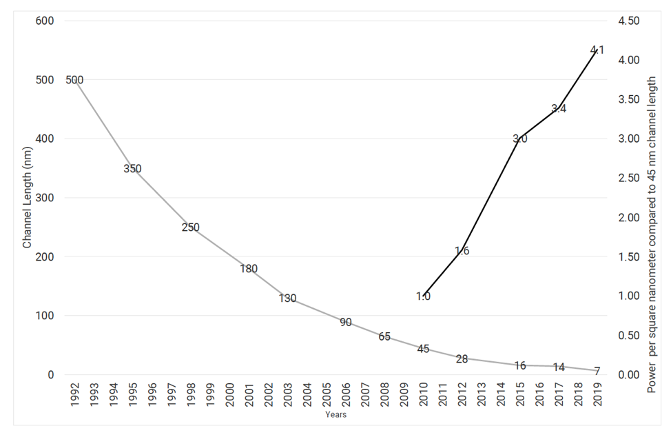
-
Avec la miniaturisation, on a aussi une limite sur l’augmentation de fréquence et une limite sur la réduction du voltage de seuil.
5.1.14. Limites sur la conception des processeurs
\(P = P_{dyn} + P_{sta} = \frac{1}{2}.C.V_{DD}^2.f + V_{DD}.I_{fuite}\)
-
Jusqu’aux années 2000, pour augmenter les capacités de calcul les constructeurs ont augmenté la fréquence et le nombre de processeurs.
-
Avec l’augmentation des courants de fuite, la dissipation énergétique devient trop importante.
-
Dorénavant pour augmenter les capacités de calcul, on multiplie le nombre de cœurs.

-
Phénomène du Dark Silicon: pour limiter la dissipation thermique on n'«allume» pas l’ensemble du CPU en même temps.
Source: Hennessy-Patterson
5.1.15. Comment mesurer l’énergie consommée
Wattmètre
-
combine un capteur d’intensité et de tension
-
mesure précise mais basse résolution d’échantillonage (peu précis sur des temps petits)

5.1.16. Compteur matériel RAPL
-
Intel implémente les compteurs RAPL (Running Average Power Limit)
-
Ne mesure pas vraiment la puissance
-
Compte le nombre et le type d’instructions exécutées
-
Utilise un modèle de prédiction de consommation
-
Résolution élevée d’échantillonage
-
Ne mesure pas les composants en dehors du CPU/GPU
5.1.17. Comparaison RAPL vs. Wattmètre (Haswell)

-
2 compteurs RAPL: pkg (CPU+caches) et ram (mémoire)
-
prédiction corrélée avec la mesure du wattmètre sauf …
-
… décalage constant: consommation idle (ventilation, alimentation, carte mère) — environ 30W
5.1.18. Techniques pour réduire la consommation
-
Meilleure conception technologique (réduire capacitance et courants de fuite)
-
Gate-clocking: extinction sélective des parties inactives du CPU.
-
Sleep-modes (P-state and C-state) & DVFS (Dynamic Voltage Frequency Scaling)
-
Power gating (désactivation d’un cœur complet)
-
Consolidation de charge et extinction de nœuds inactifs dans un cluster
-
Optimisations logicielles
5.1.19. Sleep-mode & DVFS
-
DVFS: change dynamiquement le couple voltage-fréquence du processeur.
-
Sur une architecture Haswell on a une variation quadratique de P.
-
Sur Intel: P-state (CPU qui calcule), C-state (Idle et mise en veille d’une partie des composants)

-
Un gouverneur système choisit le point de fonctionnement optimal.
-
Par exemple pour un système peu chargé on choisira la fréquence la plus basse.
5.1.20. Race to Idle
-
En raison de courants de fuite importants et de la consommation statique d’autres composants, une très bonne stratégie en pratique est le Race to Idle (ou course jusqu’au repos).
-
On fait notre calcul le plus rapidement possible, de manière à pouvoir mettre le système en veille pour limiter la consommation statique.
-
Dans ce cas, optimiser l’énergie et le temps de calcul sont liés.
Racing and Pacing to Idle, Kim, Ines, Hoffmann, 2005.
5.1.21. Embarqué vs. Serveur
-
Les politiques énergétiques ne vont pas être les mêmes sur des calculateurs embarqués et des serveurs.
-
Serveur (très contraint en charge de travail)
-
On cherche à avoir des fréquences élevées.
-
Race to Idle est souvent une bonne stratégie.
-
-
Embarqué (très contraint en énergie)
-
Souvent on limite la fréquence pour pouvoir baisser VDD et conserver le budget énergie.
-
On utilise des stratégies de limitation de puissance fines.
-
5.1.22. DVFS selon les phases de calcul
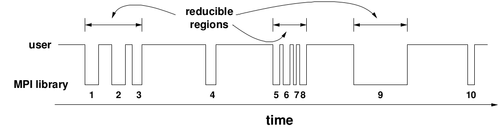
-
Il peut-être intéressant d’appliquer DVFS aux phases de communications d’un programme.
-
Si les communications sont synchrones, durant ces phases le CPU travaille peu.
-
DVFS sur le processeur permet donc d’économiser de l’énergie sans ralentir le programme.
5.1.23. Effet rebond

-
Éfficacité énergétique doublée tous les 1.5 ans
-
Puissance de calcul doublée tous les 1.5 ans
-
Nombre de PCs utilisés double tous les trois ans (entre 1980 et 2008).
Optimiser la consommation ne réduit pas l’impact total du calcul. On observe un « effet rebond » où l’efficacité gagnée est utilisée pour calculer plus.
5.1.24. Effet rebond
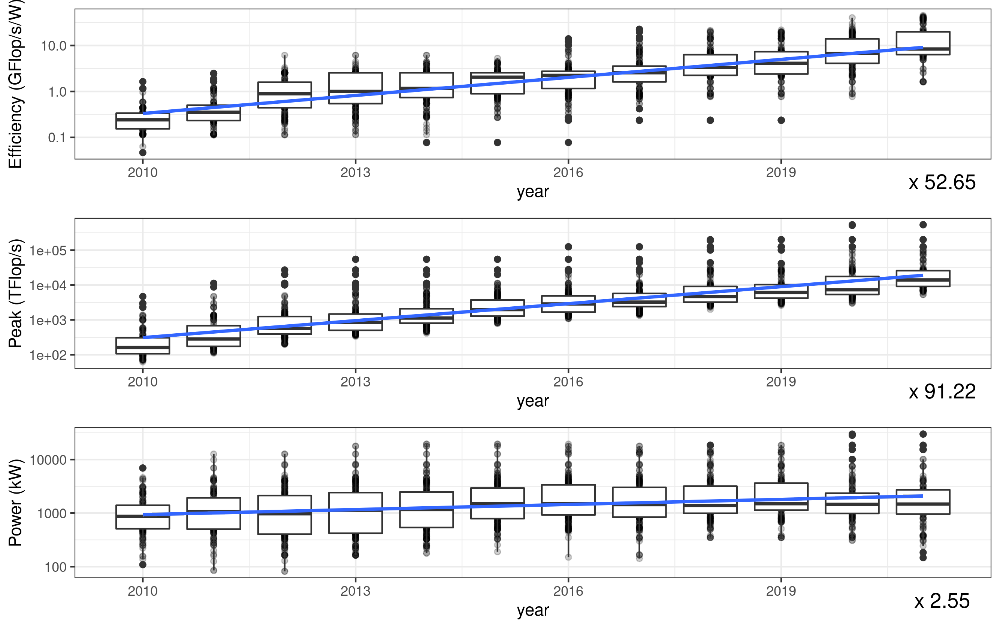
-
Malgré d’importantes améliorations de l’efficacité, l’empreinte énergétique totale augmente avec la demande en calcul.
5.1.25. Simulation numérique: vers un calcul sobre ?
-
Compromis entre justesse du modèle et coût énergétique. Exemple: Réseaux de Neuronnes (Resnet), Green AI, Schwartz 2019.
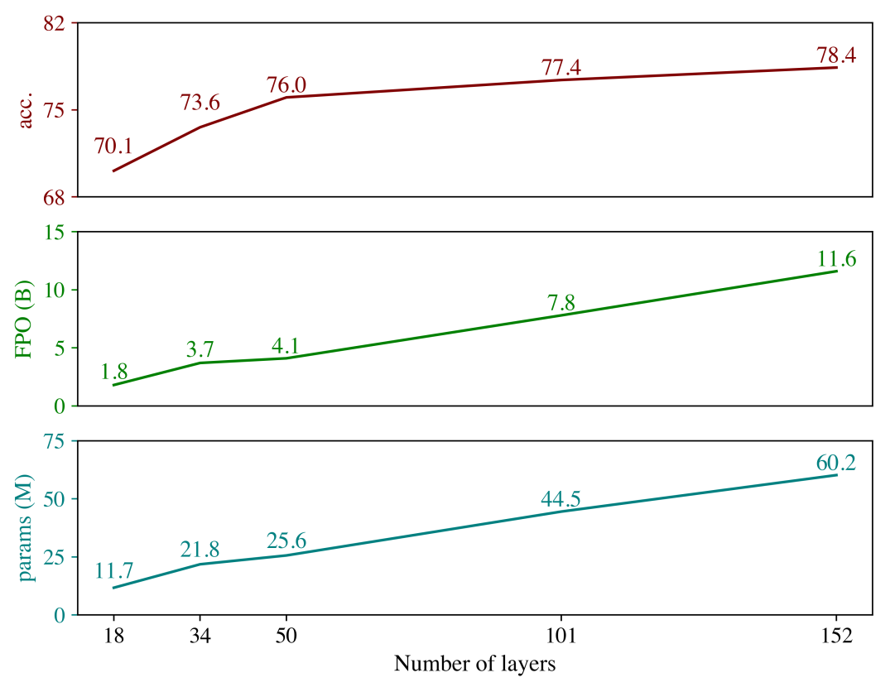
-
Pour une augmentation linéaire du coût en calcul, on a une augmentation logarithmique de la justesse.
-
Phénomène similaire observé aussi dans la simulation numérique (Masson & Knutti 2011).
-
« Loi » des Retours Décroissants ?
5.1.26. Bibliographie
-
Computer Architecture: A Quantitative Approach, Henessy, Patterson.
-
Introduction to Power Consumption in Dig. Int. Circuits, Tisserand, ECOFAC 2010.
-
Design Challenges of Technology Scaling. Borkar. IEEE. 1999.
-
The future of microprocessors. Borkar et Chien. ACM. 2011.
-
Dennard Scaling and other Power considerations, S. Gai 2020.
-
Benefits in Relaxing the Power Capping Constraint, C. Daniele et al. 2017.
-
Racing and Pacing to Idle: Theoretical and Empirical Analysis of Energy Optimization Heuristics, Kim, Ines, Hoffmann. IEEE 2015.
-
Adaptive, Transparent Frequency and Voltage Scaling of Communication Phases in MPI Programs, Lim, Freeh, Lowenthal. ACM/IEEE SC 2006.
-
Green AI, Schwartz et al, 2019.
-
Speed Scale Depdence of Climate Model Performance in the CMPI3 Ensemble, Masson & Knutti, 2011.
5.2. Optimisations de code
5.2.1. Mesure de performance
-
On ne peut pas optimiser ce que l’on ne peut pas mesurer.
-
On peut mesurer le temps, l’énergie, la mémoire, la qualité du code.
-
Souvent énergie et temps de calcul sont liés: race to idle.
5.2.2. Mesurer la performance
-
CPI: Cycles par Instruction. Plus les CPI sont bas plus le code est rapide.
-
Impact de la taille d’un tableau pour un accès mémoire.
5.2.4. Exemple
-
On mesure deux codes:
-
code 1 : 8.56 secondes
-
code 2 : 8.94 secondes
-
-
Accélération (speedup) (8.94-8.56)/8.94 = 4.2% ?
5.2.5. Attention au bruit de mesure

-
Pas de différence significative avec 30 mesures
-
Répéter les mesures et étudier leur dispersion.
5.2.6. Bruit de mesure
-
Importance de prendre en compte le bruit de mesure.
-
Sources d’indéterminisme:
-
Hiérarchie mémoire: Caches, TLB, Buffers E/S, Disque dur, swap
-
Pipeline d’instructions
-
Entrelacement des threads
-
DVFS / C-States et P-States
-
5.2.7. Pour stabiliser les mesures
-
Exécutez une première fois votre programme pour charger les données dans le buffer E/S (sauf si vous souhaitez en mesurer l’effet).
-
Utiliser le pinning de processus (évite que les threads soient migrés en cours d’exécution).
-
Désactivez le DVFS de votre processeur (gouverneur performance)
-
Évitez de faire tourner d’autres processus et augmentez la priorité du processus mesuré avec
nice -20
5.2.8. Comment mesurer ?
-
Insertion de sondes directement dans le code. Pour Rust, vous pouvez utiliser le crate
Bencher.
pub fn add_two(a: i32) -> i32 {
a + 2
}
#[cfg(test)]
mod tests {
use super::*;
use test::Bencher;
#[bench]
fn bench_add_two(b: &mut Bencher) {
b.iter(|| add_two(2));
}
}$ cargo bench
Compiling adder v0.0.1 (file:///home/steve/tmp/adder)
Running target/release/adder-91b3e234d4ed382a
running 2 tests
test tests::bench_add_two ... bench: 1 ns/iter (+/- 0)5.2.9. Comment mesurer ?
-
Utiliser un outil externe. Par exemple pour mesurer des compteurs de performance: RAPL, cache misses, cycles, etc.
-
De nombreux outils disponibles (Perf, Likwid, MAQAO, PAPI, VTune, …)
-
Sous Linux, l’outil perf permet d’interroger directement le noyau pour accéder à ces compteurs.
-
Exemple: pour mesurer les cycles, le nombre d’instructions, ainsi que les cache misses:
perf stat -e cycles,instructions,cache-misses ./programme5.2.10. Hiérarchie Mémoire
Trois niveaux de cache (architectures serveur)
-
L3 (partagé)
-
L2 (par cœur)
-
L1 données et instruction
5.2.11. Latences (Nehalem)
Niveau |
Latence |
L1 (hit) |
~4 cycles |
L2 (hit) |
~10 cycles |
L3 (non partagée) |
~40 cycles |
L3 (partagée) |
65-75 cycles |
RAM |
> 120 cycles |
SSD |
~300 000 cycles |
5.2.12. Fonctionnement basique d’un Cache
-
Le CPU demande une adresse mémoire au L1.
-
Si l’adresse est disponible dans le L1, c’est un hit.
-
Sinon c’est un miss, le L1 demande au niveau supérieur, ici le L2, de lui transmettre la donnée.
-
La demande remonte la hiérarchie mémoire jusqu’à ce que la donnée soit trouvée.
5.2.13. Fonctionnement basique d’un Cache
-
Pour être efficace les données sont déplacées par paquets, les lignes de cache (typiquement 64 octets).
-
Le bus mémoire détecte les accès linéaires à la mémoire et récupère les données en avance (prefetcher).
for i in 0..n {
a[i] += 1;
}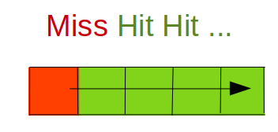
5.2.14. Politique de remplacement
-
LRU (Last Recently Used)
-
Les données les plus anciennement utilisées sont remplacées en premier.
-
Des politiques complexes permettent d’assurer la cohérence des données partagées en L3.
5.2.15. Problème de capacité
for i in 0..n {
for j in 0..n {
a[j][i] += 1; // a[j][i] => a[j*n+i]
}
}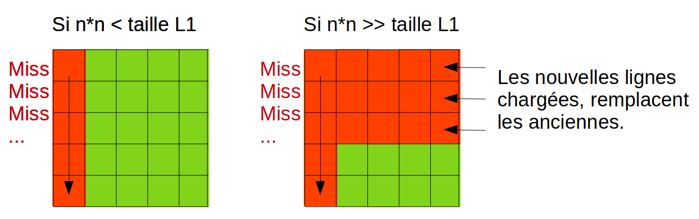
5.2.16. Importance de la localité
Pour optimiser l’accès à la mémoire, on conçoit notre algorithme pour maximiser
-
Localité spatiale: on accède aux données dans l’ordre des adresses mémoire
-
Localité temporelle: si des données sont réutilisées, on diminue le temps entre deux réutilisations pour éviter qu’elles soient remplacées entre temps dans le cache.
5.2.17. Un exemple d’optimisation: transformations de boucles
-
Transformations de boucles: souvent effectuées automatiquement par le compilateur.
-
Pour que la transformation soit faite, le compilateur doit prouver que la sémantique du code ne change pas.
-
Dans certains cas, le compilateur n’arrive pas à faire tout seul la transformation.
5.2.18. Loop interchange
for i in 0..n {
for j in 0..n {
a[j][i] = a[j][i]*a[j][i];
}
}Comment optimiser ce code ?
5.2.20. Loop-invariant code motion
for i in 0..n {
for j in 0..n {
a[i][j] = c[i] + b[i][j]
}
}Comment optimiser ce code ?
5.2.22. If hoisting
for i in 1..n {
a[i] = a[i] + 1 ;
if i<3 {
b[i] = a[i]*c[i];
} else {
b[i] = a[i-1]*b[i-1];
}
}Comment optimiser ce code ?
5.2.23. If hoisting
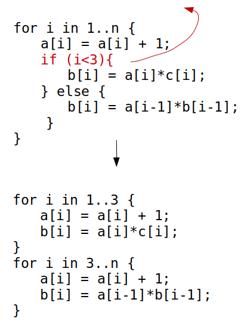
5.2.24. Loop fusion / fission
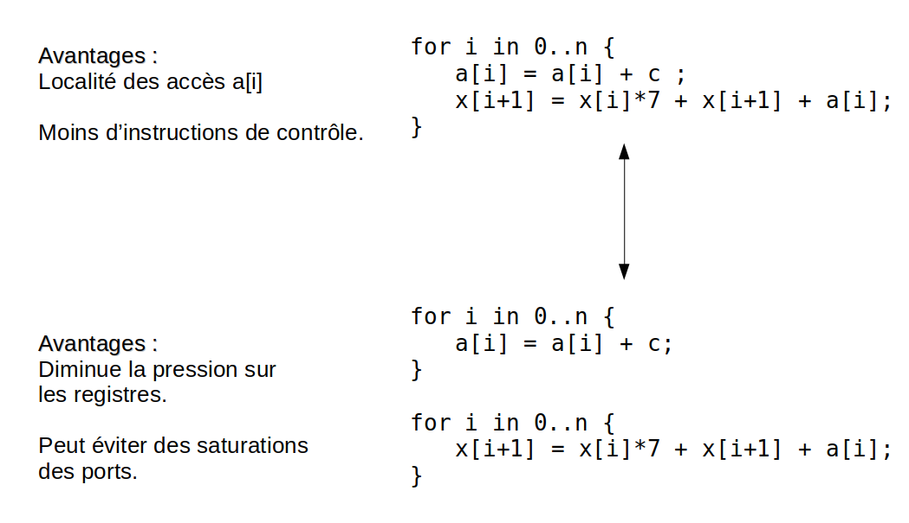
-
Comment choisir ? Cela dépend de l’architecture. Les compilateurs utilisent des modèles de coût.
5.2.25. Loop peeling
for i in 0..n {
a[i] = a[i] + 2;
}
for i in 2..n {
a[i] = a[i] * 2;
}Comment optimiser ce code ?
5.2.26. Loop peeling
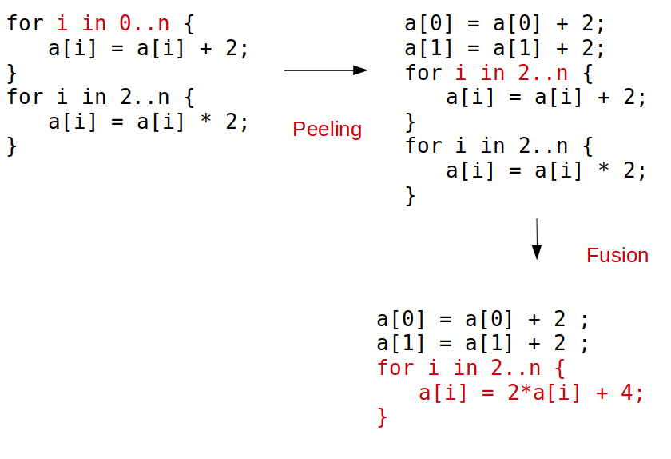
5.2.28. Loop unroll
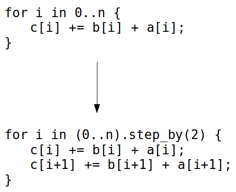
-
Réduit le surcoût de contrôle.
-
Parfois, permet de vectoriser le code.
-
Parfois, fait apparaître des simplifications.
5.2.29. Loop blocking ou tiling
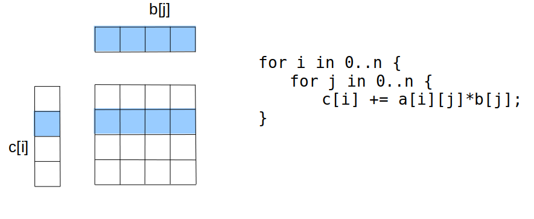
-
ngrand:b[]ne rentre pas dans le cache. -
Localité spatiale: ok.
-
Localité temporelle: problème sur
b[j]. -
Comment optimiser ce code ?
5.2.31. Un mot rapide sur la parallélisation
Les architectures récentes sont multicœurs, pour en tirer parti les programmes peuvent être parallélisés.
-
Décomposer le travail en parties indépendantes. Chaque partie sera effectuée par un thread dans un cœur différent.
-
Limiter au maximum les communications et synchronisations entre threads (coûteuses).
5.2.32. Exemple de parallélisation en rust
extern crate rayon;
use rayon::prelude::*;
fn main() {
let mut v = vec![1, 2, 3, 4, 5, 6, 7, 8, 9, 10];
v.par_chunks_mut(3).for_each(|chunk| {
for x in chunk { *x *= 2; }
});
}-
par_chunksetpar_chunks_mutdécomposent un itérateur en morceaux (chunks) indépendants. -
la méthode
for_eachva exécuter un traitement parallèle sur chaque morceau. -
|chunk| { … }est une clôture. C’est une fonction anonyme qui peut capturer les variables de l’environnement où elle est déclarée.